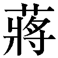
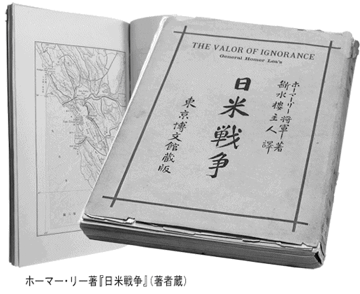

| アメリカが畏怖した日本 真実の日米関係史 (PHP新書) | |
| 渡部昇一 | |
| PHP研究所 (2011) | |
アメリカが畏怖した日本
真実の日米関係史
渡部 昇一
アメリカが畏怖した日本 【目次】
昭和三十五年（一九六〇）六月二十三日、岸信介内閣によって改定された日米安全保障条約が発効した。それから数えて半世紀が過ぎ、冷戦の終焉を筆頭にさまざまな出来事が起こった。いまや国際情勢は大きく変わり、われわれ日本人が対米関係をどのように築くべきか、改めて考える時期に来ている。
その際、日米間で繰り広げられた歴史を振り返る意味が大きいことはいうまでもないが、具体的な事象を見ていく前に、まず大前提を押さえておくことにしたい。大前提とは日米両国の「国体」、つまり「国の体質」である。これを言い換えれば、歴史の中で育まれた国柄の差異ということになる。
日本という国の始まりは神話の時代までさかのぼる。初代天皇である神武天皇の「八紘をおおいて宇となさん」という言葉が、つまり「八紘一宇」の精神が国柄を象徴していると私は思う。
それを端的にあらわすのは、勝者となった大和朝廷が自分たちの神を押しつけず、敗者の側はそれぞれの神を祀ることが許されたことだ。だから、日本は「八百万の神」の国となった。平安時代に入っても、征夷大将軍の坂上田村麻呂が東北地方に遠征したとき、蝦夷を撃滅しようという発想はなかった。それどころか、田村麻呂の態度には敗者を慮る精神さえ見て取れる。
この「相手を尊重する」という精神は、封建時代に培われた武士道の根底にも流れている。「武士は相身互い」であり、敗者に対する「武士の情け」は当然求められるべきことだった。
一方のアメリカ合衆国は、一六二〇年、メイフラワー号に乗った清教徒の一団が北アメリカ大陸の東海岸に着いたことから始まる。「建国の父たち」と称される彼らがニューイングランド植民地の基礎を築き、ＷＡＳＰ（ホワイト･アングロサクソン・プロテスタント）と呼ばれるイギリス人の移民が十三の植民地をつくった。これらの植民地がイギリスから独立し、今日のアメリカ合衆国を形づくる核となった。
ただし、イギリス人の植民者が到来したとき、北アメリカ大陸は「無住の地」ではなかった。先住民（インディアン）がいた。つまり、アメリカはインディアンを強引かつ冷徹に追い払うことで拡大したのである。
このアメリカという国の特徴として、イギリスのジャーナリストであるセシル・チェスタトン（作家Ｇ・Ｋ・チェスタトンの弟）が著書の『アメリカ史』（初一九一九・再一九四〇）で「アメリカは中世抜きで誕生した国」という鋭い指摘を記している。
「中世がない」とはどういうことか。ニューイングランドに入植した「建国の父たち」はピューリタンだった。カルビン派の系統に属するピューリタンは最も先鋭的なプロテスタントであり、彼らにとって、カトリックが支配した中世は暗黒の時代である。当然、そんな時代を重視するはずはない。そして、中世の前の時代、すなわち古代ギリシアと古代ローマに理想を求めた。その結果、中世にあったもので、アメリカから抜け落ちた要素があるというのだ。
いわれてみれば、アメリカの建築物は、はじめのうち、古代ギリシア的、あるいは古代ローマ的なものばかりである。ゴシック建築が建つのは、アイルランドやイタリアからの移民が入るようになってからだ。
建築様式は一目で違いがわかるが、目に見えないものでアメリカに欠如した「中世」として、「奴隷制度の廃止」がある。奴隷制度は古代ギリシア・ローマともに文明の基盤ともいえるものだった。チェスタトンは中世を資産分散主義の時代と考え、近代の資本主義と社会主義の中庸を得た制度があったと考えた。この思想は奴隷制度とは相容れないものだった。それで奴隷を千年かかってなくしたのが中世という時代であり、中世末期のヨーロッパから奴隷制度は消えていた。しかし、中世を暗黒時代と考えて古代ギリシア・ローマを重視する人々は、農業に必要となれば「奴隷を入れる」という発想を自然に受け入れられたのだろう。
もう一つ、これが重要なのだが、「騎士道の欠如」をチェスタトンは挙げている。騎士は中世において誕生した。裁判の陪審員制度はアーサー王の円卓の騎士から始まるという説があり、また「騎士を裁くものは騎士しかいない」という考え方がいつの間にか「市民を裁くものは市民しかいない」というふうに変質して陪審員制度に至ったとする説がある。陪審員制度の伝統はアメリカにも入った。しかし、アメリカには騎士そのものがいなかったために肝心なものが欠けてしまった。それは「敵を尊重する」「敵を尊敬する」という精神である。
この点、日本には騎士道に通じる武士道があったから、近代に入っても敵を尊重する精神が色濃く残った。日露戦争では乃木希典将軍が旅順でステッセル将軍を丁重に取り扱い、日清戦争でも清の丁汝昌提督が威海衛で自殺したとき、連合艦隊司令長官・伊東祐亨は「遺体をジャンクで帰すのが気の毒だ」といって軍艦に載せて運ぶことを許した。これらは「武士は相身互い」「武士の情け」の発露である。
さらにいえば、合併した朝鮮の王位を残し、朝鮮の貴族である両班を日本の華族にしてつぶさなかった。満洲国には満洲族の皇帝を立て、大臣はすべて満洲人および清朝の忠臣を据えた。彼らに実務能力がないから、日本人がその下について助けた。台湾でも巨額の投資をして資産家を育成し、その金持ちから貴族院議員を選んでいる。いずれも、一つ屋根の下でみんなが一緒に暮らそうという精神が発揮されていた。
翻ってアメリカを眺めると、形だけであったとしても、征服したインディアンの酋長を州の名誉知事に据えたとか、名誉上院議員にしたかといえば、そういう事例は聞いたことがない。ここにおいて、日米両国の国柄は決定的に違うのである。
中世と騎士道精神に関してつけ加えると、身分が高い騎士はプライドも高い。そういう連中だから、日本の武士のようによく殺し合う。その殺し合いを形式的に整えたものが「決闘」だ。
騎士が闘うとき、双方にそれぞれの理由があるから、その言い分を端の者が「どちらが正しい」といってはいけない。問題とするのは「正しいやり方で闘うかどうか」である。
ピストルによる決闘を例にとれば、「背中合わせに立って、十歩、前に歩いてから振り向いて撃つ」と決めたのに、七歩で振り返って撃った者は悪い。この発想が国際法の戦争定義には流れている。
国際法という観念が出てきたのはヨーロッパで起こった三十年戦争の後である。この戦争の特徴は「宗教戦争」であり、宗派が違う敵は悪魔とみなされたので、ものすごく殺し合った。三十年戦争の中心地となったドイツは、人口が三分の一、五分の一に減った地方が出るほどの惨状を呈した。その反省からウェストファリア条約が生まれ、次第に国際法という観念が固まっていく。
このとき、戦争の定義は騎士道に基づかなければならないと考えられ、戦争した国はどちらがいいとか悪いとかいわず、「庶民を殺した」「不法な略奪をした」というような戦争中の不法な手続きの問題のみを問うようになった。勝ったほうが話し合って土地を取るなり、賠償金を取るなりしていいけれども、負けた相手を裁くという発想はない。これが国際法の基本中の基本と位置づけられる。
そして、国際法がかなり厳格に守られると、戦争は儀式のような性質を帯びていく。吉田茂の息子・吉田健一によれば、十八世紀の戦争で向き合って鉄砲を撃つとき、一方の司令官が「あなたのほうからどうぞ」というと、もう一方の司令官が「いや、あなたのほうから撃ってください」と譲り合うようなやり取りがあったという。戦争までが高級なスポーツのように変質したのである。それは建築や音楽など文化面でバロック様式が生まれる時代と重なっている。
「スポーツ化した戦争」が崩れかかったのは第一次大戦だった。このとき、アメリカが加わり、それにつられて、負けたドイツの皇帝を裁けという声が出た。それでも、まだ戦争の主体がヨーロッパ諸国だったから、ドイツの皇帝は裁かれることなく、親類のいるオランダに行って平和に暮らした。それを殺せという国はなかった。
ところが、第二次大戦ではアメリカが主導権を握った。戦後はそこにソ連が加わる。どちらも中世がない国である。一言でいえば、アメリカとソ連という戦後の二大勢力は両方とも「相手を尊敬する」という精神を忘れた国なのだ。そういう国が主導すると、「勝ったほうが正しく、負けたほうが悪い」という発想が前面に出てきて、騎士道精神が完全に失われた。アメリカとソ連が三十年戦争の形に戻したといっても過言ではない。
ただし、アメリカのすべてが「敵を尊敬する精神」に欠けているわけではない。実際に戦った人たちのなかには騎士道精神に通じるものがうかがえる。たとえば、硫黄島で戦ったアメリカ兵は「相手は勇敢だった」と日本軍を讃えている。戦闘機乗りは坂井三郎を尊敬する。アメリカ人にもそういうセンスはある。しかし、国のレベルになると違う。なんとなれば、アメリカでインディアンを対等に扱ったら土地を奪えない。詳しくは後述するけれども、「相手が悪いから、追い払ってもいい」という理屈がインディアンと戦う正当性を与えている。これは発想において、宗教戦争と同じなのである。
騎士道精神なきアメリカには、イギリスの哲学が大きな影響を及ぼしている。当時のイギリス哲学が実験場を得たような形でできた国の一つがアメリカともいえよう。
その第一はベーコンの哲学である。最近、マコーレーの『ベーコン論』を読んで非常に感心した。ソクラテスから始まる哲学は「自分がいかに立派な人間になるか」を考えるが、実際のところ、長い歴史の中で人間は偉くなっていない。たとえばストア哲学者は克己・内省を極端まで実践しようとした。しかし、その哲学者は向上したとしても、人類が向上したということがないことは、ローマの歴史を見ればよくわかる。これに比べて、ベーコンは「何かを発明して、それを生活に加えていくことが向上である」と考えた。そして、そこには「本当の間違い」が存在しない。一つの間違いは「それが駄目だった」という発見であり、一歩、前進したことになるのである。すなわち、人間の営みは常に実験であり、「失敗が失敗でない」というプロセスを従えて必ず良くなっていく。これがベーコンの哲学の一面であるとマコーレーはとらえている。
この発想をアメリカにあてはめると、見事なまでにピタリと合う。発明王エジソンが白熱灯のフィラメントを発明したとき、いろいろな素材を炭素化して実験した末、何十本目かで成功した。「ずいぶん失敗されましたね」といわれたエジソンは、「失敗するたびに、これは駄目だ、ということを発見したのです」と答えたという。まさにベーコン哲学の権化である。
アメリカにとって幸いだったのは、広大な土地があり、人手が足りないという環境であったことだ。エジソンが活躍した当時、ヨーロッパでも発明熱は盛んだったが、発明された織物の機械を壊そうとする運動が起こったりした。それによって仕事を失う職人がいたからだ。しかし、人手の足りないアメリカでは、発明が常に歓迎された。このような事情から、ベーコンの哲学はアメリカ人の天性のようなものになっていったと思う。
もう一つ、ホッブズの「自然法の原理」がある。これはＷＡＳＰの大本であるイギリス人に染み込んだ哲学だ。
「自然法の原理」とは何か。元来、人間はすべて自然の状態にあり、人間同士は必ず喧嘩をする。そういう状態はお互いに困るから、どこかで契約を結び、安定を図る。この契約を破ることは悪であり、そういう輩を叩きつぶすことは正義である。この論理が先住民のインディアンに対して使われた。
ベルナール・ファイの『アメリカ文明の批判』によると、植民のやり方は次のようになる。
イギリスからの移民たちが開墾しようとする土地に先住民のインディアンがいる場合、自分たちが強いときは強行できた。しかし、インディアンのほうが強いと手がつけられない。そういう場合は、ラム酒、ウィスキーをインディアンに振る舞い、酒が回った時分に契約書を出して署名させる。そして、しばらく経つと森を切り払って畑にした。当然、インディアンは怒る。
「酔っぱらって何かの約束をしたが、それは森で狩りをしてもいいということだ。森を切り払って畑にするということは考えなかった」
このような抗議があっても、「契約したではないか」という言い分で突っぱねる。要するに、相手が契約の詳細を知っていようといまいとかまわないのだ。そして、インディアンが開墾の邪魔をすれば、契約を破った悪人であるから、武器を使って撃退するのは正当な行為となる。だから、白人の入植者に罪の意識は生まれない。「自然法の原理」はインディアンを迫害しても後ろめたく思わせない仕掛けだったといえよう。
それはある意味で、南アメリカと北アメリカの違いにもなる。南アメリカにはカトリックの人たちが入った。彼らも異教徒を単純に悪魔だと考えたから「殺してもいい」というような話になったけれども、改宗した者とは仲良くしたし、結婚もした。だから、いつの間にか交じってしまい、今日に至っている。北アメリカのほうのプロテスタントは交じらないで、「インディアンはインディアン」でつぶしていったのだ。
アメリカ合衆国の特性を非常にうまく表現しているのは、和辻哲郎が昭和十八年（一九四三）十二月に書いた「アメリカの国民性」という小冊子だ。そこにイギリスの劇作家バーナード・ショーが書いた喜劇『運命の人』からナポレオンの台詞が引用されている。ナポレオンが語っているという設定なので、語られる対象は「イギリス人」となっているが、これを「アメリカ人」に置き換えてもまったく違和感がない。白色アメリカ人の先祖つまりＷＡＳＰは、イギリス人だったのだから。
「イギリス人は生まれつき世界の主人たるべき不思議な力を持っている。彼はあるものが欲しい時、それが欲しいということを彼自身にさえ言わない。彼はただ辛抱強く待つ。そのうちに、彼の欲しい物の持ち主を征服することが彼の道徳的・宗教的義務であるという燃えるような確信が、どういうわけか、彼の心に生じてくる。そうなると彼は大胆不敵になる。貴族のように勝手に振る舞い、欲しいものは何でも掴む。小売商人のように勤勉に堅実に目的を追求する。それが強い宗教的確信や深い道徳的責任感から出るのである。で彼は効果的な道徳的態度を決して失うことがない。（中略）しかも、イギリス人が不正であることは決してないのである。彼は何事でも原理に基づいてやる。戦う時には愛国の原理に基づいている。泥棒する時には、ビジネスの原理に。他を奴隷化する時には、帝国主義の原理に。他をいじめる時には、男らしさの原理に。......彼の標語は常に義務である。しかし、その義務は必ず国民の利益と合致したものでなくてはならないのである」（原文は旧仮名遣いと旧字）
面白いのは、必ず「原理」に基づき、「国民の利益と合致した義務」が「標語」となる点である。
たとえば、アメリカの独立宣言では「all men are created equal（すべての人は平等につくられている）」と記されている。これは本国にいるイギリス人とアメリカにいる男の権利が同じであるというぐらいの意味だった。それを後で勝手に拡張していき、いつの間にか「all men」が「すべての民族」という解釈になったが、これなどは「国民の利益と合致した義務」が「標語」となった一つだろう。
十九世紀のアメリカにおいて、「原理に基づき、国民の利益と合致した義務を標語とした」典型例が「マニフェスト・ディスティニー（明白なる運命）」である。最初に使われたのはアンドリュー・ジャクソン大統領の一八二四年の演説だとされるが、印刷された記録に残されているのは一八四五年、オサリヴァンという人が『Ｕ．Ｓ．マガジン・アンド・デモクラティック・レヴュー』に「この大陸に広がることが神の摂理によって与えられた我々の明らかなる運命」と書いたときだ。
「大陸に広がる」とは「合衆国が北アメリカ大陸で拡張していく」ということであり、それが神が与えた運命であると、自分たちに都合のいいことをいったわけだが、これはその後ほとんど休みなく語られてきた。『オックスフォード・イングリッシュ・ディクショナリー』の定義によると、「アングロサクソンが絶対的に優れていることは避けがたいことであるという教義であって、アメリカ、及びアングロサクソンの民族は全西半球を支配すべきであると信ずる人たちによって用いられたフレーズである」という。
なお、アングロサクソンとは西ゲルマン人である。アングルはユトランド半島にある小さな地方の名前、ザクセンはドイツの北部地方の名前として残っているが、そこにいたゲルマン人の部族がブリテン島に入った。ただし、アングロ族もサクソン族も元来は農耕民族で、決して海洋民族とはいえない。そこに北ゲルマン人のバイキングが加わったことで、イギリスという国の性格に「海」が入ってきたのだ。
イギリスにはバイキング王朝があり、長続きしなかったけれども、子孫は残った。一例を挙げると、トラファルガー海戦で知られるネルソン提督の「ネルソン」はデンマーク語で「ニールセン」にあたる。彼はイギリスの北海沿岸の出身で、明らかにバイキングの子孫である。
バイキングは北欧にいるときは大したことがなかった。しかし、イギリスに渡って繁殖し、ブリテン島を基盤として海賊王国を築いた。その子孫がアメリカに渡ったと考えるとわかりやすい。「アングロサクソン」というより、むしろ「バイキング」といったほうがその性格をあらわすような気がする。十七、八世紀に、ベーコンやホッブズの哲学などを背負い、ピューリタンの精神で乗り出したバイキングがアメリカ人というような感じである。
だから、自分たちが征服するのはマニフェスト・ディスティニーとし、戦争において、常に自分たちは正義の側に立っている。このような考え方が普通のアメリカ人の頭に染みつき、アメリカの基本的な態度となった。
自分たちに都合のいい立派なことはいうけれども、都合の悪いことは問題にしないのがアメリカという国である。他国にとってはまことに厄介な存在で、特にひどい目にあったのは隣国のメキシコだ。領土内のテキサスに入り込んだアメリカの植民者が反乱を起こし、テキサス共和国を樹立すると、一八四五年にはアメリカがテキサス共和国を併合してしまった。それだけではない。アメリカから戦争を仕掛けられて敗れたメキシコは、一八四八年にカリフォルニアやニューメキシコも奪われている。
すでにイギリスとの交渉でオレゴン地域を獲得し、その南側のカリフォルニアも手に入れたアメリカのさらに西には太平洋が広がっていた。マシュー・ペリー提督の黒船が浦賀沖に姿を現すのはそれから五年後の一八五三年である。
アメリカ合衆国大統領の親書を携えたマシュー・ペリー提督が、四隻の軍艦を率いて浦賀沖に現れたのは嘉永六年（一八五三）のことである。開国を迫られた徳川幕府は、翌年、日米和親条約（神奈川条約）を締結し、日本の鎖国体制は終焉を強いられた。
「ペリー来航」「黒船来航」などと呼ばれるこの事件は、オレゴンとカリフォルニアを手に入れて西海岸まで領地を拡張したアメリカが、さらに西の太平洋へ乗り出した象徴的出来事のように映る。しかし、当時のアメリカはまだ「太平洋」に大きな野心をもっていたわけではなかった。ペリー艦隊を日本に派遣したのは、日本の開国が目的であるのはもちろんだが、基底にあったのは、実は「シナ」なのである。
欧米列強のシナ進出というと、イギリスを主役ととらえるイメージが強いが、アメリカもまた、イギリスから独立する以前より、すでにシナと交易していた。その頃のアメリカとシナを結ぶ主要な航路は、東海岸から南大西洋へ向かい、喜望峰をまわってインド洋、南シナ海に進むルートだった。それはイギリスが喜望峰経由でシナに向かうのと、時間的にそれほど違わなかったらしい。
さらにいえば、アメリカのほうがイギリスより有利だった点もある。これは徳富蘇峰の指摘だが、シナ人が喜ぶ三つの産物──「銀」「毛皮」「ニンジン」──をアメリカが有していたことだ。
清国は銀本位制であり、アメリカは隣国メキシコとの貿易で銀を手に入れることができた。そして、「一狐裘三十年」という諺があったり、『十八史略』では、孟嘗君が狐の毛皮のコートをくれたら逃がしてやるといわれたという話があるほど、シナ人は毛皮に高い価値を置く。未開発の大地が広がるアメリカには野生動物がたくさん生息していたから、毛皮はいくらでも手に入った。最後のニンジンについては、朝鮮ニンジンとは少し種類が違うようだが、アメリカ大陸原産のニンジンでも薬用に使われるものがある。こういった「競争力のある商品」を持ち込み、シナからは茶、絹などを購入することで、貿易が行なわれたのである。
アメリカとシナの密な交流に関して、「シナにおけるイギリスのアヘン販売に一枚噛んで儲けたのがフランクリン・ルーズベルト大統領の母方のデラノ家だ。だから、ルーズベルトはシナびいきなのだ」という意見もあるが、ともかくアメリカは日本やハワイの存在を意識する以前から「シナ」とつき合っていたのだ。当然ながら十九世紀半ば、太平洋に出ていこうとするアメリカの目は、日本でなく、シナに向いていたのである。
以上、歴史的な経緯を振り返ると、アメリカ人がシナ好きであり、シナにシンパシーをもつ理由がわかると思う。シナ事変の際、いろいろな条件はつけたものの、介石を積極的に支援したのは、深い意味でシナびいきがあったからだ。感覚的にアメリカは中国とわかり合えるところが多い。一方、「シナとは距離が近く、つき合いが長いのでわかり合える」と日本人は思いがちだが、ここ五百年ぐらいの間、日本がシナと関わったのは倭寇と朝鮮出兵で明と戦ったぐらいで、日本全体からすれば縁が薄い。その後、シナと正式につき合い始めたのは明治に入ってからだ。
近代以降、日本はシナよりもアメリカとのつき合いのほうが古くて長い。日本政府が欽差大使（勅命による大使）として伊達宗城（大蔵卿）、随員として柳原前光（外務大丞）、津田真道（外務権大丞）を清国に派遣して修好条約を結ばせることに決定したのは明治四年（一八七一）四月二十七日であり、伊達が清国の欽差全権大臣李鴻韋と天津において日清修好条規・通商章程・海関税則を調印したのは同年七月二十九日であり、批准書交換が行われたのは二年後の明治六年（一八七三）四月三十日である。つまり、日米修好条約よりも日清修好条規は約二十年も遅いのだ。これは日本人が見落としがちな視点である。
アメリカが日本に求めたのは、一番がシナへ向かう船および捕鯨船の中継地ならびに避難先となる港の確保、第二に水、石炭、その他の補給、第三が貿易であるが、貿易は付け足しのようなものだった。
といっても、日本を軽く見たわけではない。元来は地中海に行く予定だったペリーは、日本派遣を命じられると、本格的に日本の研究をしてきちんと準備をしている。たとえば、欧米で日本のことを最も知っているオランダから日本の地図を買った。当時の金額で三万ドルもの大金だったという。
それから、日本に滞在したシーボルトの書いたものは全部買い集めて読んだ。その成果の一つが浦賀沖に停泊し、交渉したことだ。はじめは長崎に行ってくれといわれたが、勉強しているだけに、「長崎に行けば、オランダ人扱いになる。だから浦賀でやる」という判断だった。
さらに、ペリーの勉強がいかに綿密なものであったかを物語るのは、ペリー自身があまり日本人の前に姿を現さないという方針をとったことである。なぜ、そうしたかというと、「将軍が人前に出ないように、日本はもったいをつける国だ。だから自分も出ていかずに、権威があるように見せよう」と考えたからだ。
このような「心理戦」にまで目配りしたアメリカと比べ、日本のほうはオランダから「アメリカの外交使節が来るかもしれない。対応を準備したほうがいい」と忠告されていたのに、ほとんど何もしていなかった。そうであるにもかかわらず、最悪の結果を招かなかったのは、ジョン万次郎（中浜万次郎）の存在がきわめて大きい。
土佐の貧しい漁師の子だった万次郎は、下働きをしていた鰹船が難破したとき、アメリカの捕鯨船に助けられた。他の水夫たちは助けてもらっただけだが、十四歳だった万次郎は違う。まず、英語を覚えようとした。それから、マストに上がって鯨の発見を手伝うなど、積極的に働いた。これを見た船長が感心して自分の養子に迎え、ニューイングランドへ連れて帰ると、バートレット・アカデミーに入れて航海士の勉強をさせた。ちなみに、当時の大学は主として牧師を養成する学校であり、職業の専門技術を習得するのはアカデミーだったから、今日でいえば技術系の大学に入って学んだと理解していいだろう。
アカデミーを優秀な成績で卒業した万次郎は、捕鯨船の船員として海に出た。あるとき、航海中に船長が脳を患うという事態が生じ、船員たちが選挙で新しい船長を選ぶことになった。投票の結果、万次郎ともう一人が同数票を得たので、年上だったもう一人が船長になり、万次郎は副船長兼一等航海士となった。少し前まで漂流者だった東洋人の若者を評価したアメリカ人も偉いが、それだけの実力をわずかな期間で培った万次郎の有能さは驚異的である。
余談になるが、私はこれを知ったとき、アメリカ人のいう「ピープル」は「人民」と訳してはいけないという確信を得た。貴族や王様がいるからピープルが人民なのであり、そんなものがいないところでピープルといったら、「人民」ではなく、「皆の衆」が適当だろう。したがって、リンカーンのゲティスバーグ演説に出てくるgovernment of the people, by the people, for the peopleという有名な言葉も、「人民の、人民による、人民のための政府」は誤りであり、「皆の衆の、皆の衆による、皆の衆のための政府」と訳すべきだと考えるようになった。戦前の対米外交のまずさもこの辺に根があったと思う。
船乗りとしてアメリカで暮らすことのできた万次郎だが（白人の女性と結婚したともいわれる）、故郷に残した母を案じて、帰国を決意する。カリフォルニアの金鉱で渡航費用を稼ぎ、薩摩藩に属する琉球に向かった。嘉永四年（一八五一）、琉球に上陸した万次郎は鹿児島に送られ、次に長崎へ連れていかれて長崎奉行所で取り調べを受けたあと、土佐に戻ることができた。
ペリーがやってきたのは万次郎の帰国から二年後のことだ。人材を求める幕府が、土佐藩で士分に取り立てられていた万次郎を江戸に呼び寄せた。話を聞いてみると、今までの情報とは桁違いに正確だった。たとえば、ペリーのことをそれまで「ペルリ」と発音していたが、本当は「ペリー」だというところから始まり、あらゆる情報が正確なのだ。
その万次郎がペリーの使命に関して、「戦争するために来たのではない。上陸して占領するためでもない。アメリカ船が補給を受けられる港を求め、できたら貿易もしたいという程度のことである」と説いた。幕府はこれを認め、アメリカへの対応策を講じたと思われる。烈公といわれた水戸藩主の徳川斉昭などは、万次郎がアメリカのことをあまりによく知っているのでアメリカのスパイかもしれないといって嫌ったとする説もあるが、アメリカとの交渉を陰で聞かせたらしいから、幕府は万次郎を信用したと考えていいだろう。
万次郎の提供した上質の情報があったので、幕府はペリー艦隊を武力で追い払わず、交渉に応じた。また、メキシコ戦争の絵などを示して脅されても、過剰な反応をしなかった。もし、あのとき、万次郎がいなかったら、日本はペリー艦隊を相手にアヘン戦争のような戦いをやった可能性も考えられる。「相手が撃ってきたら応戦してもいい。しかし、正当防衛のケース以外、戦闘してはならない」とアメリカ政府はペリーに命じていた。したがって、日本が手を出していたら戦端が開かれてしまっただろう。幕府がペリー艦隊を砲撃しなかったのは、まことに賢明な対応だったのである。
昭和七年（一九三二）の講演で、徳富蘇峰はペリーが本国政府に出した建白書について言及している（『東西史論』──昭和八年民友社──収録）。その一部を紹介して、アメリカならびにペリーの意図を確認してみよう。
「捕鯨船、其他船舶の避難所及び糧食、薪水等の需要品補給の港湾を、一箇所及び数箇所得る事は、必ずしも至難の業ではない。万一日本政府が、本土に於て之を肯ぜず、猶お兵力に訴えてもと言う場合に、日本の南方にて、良港を有し、飲料水、及び食料を得て、便宜ある島嶼一二箇を占領し、軍艦の屯所を作り、而して後徐ろに其の目的を達すべく手段を廻らすこと」
「次には日本、支那両属の姿である琉球にも、重なる港を開かしむる覚悟だ。斯く避難港が出来、船舶が輻輳するに際しては、勢い食料品の需要が多くなり、随って其の地方に果物蔬菜等の栽培を奨励するの必要がある。其為め若干種子類を齎らして来たったが、猶お農具の類等も追々送付希うこと」
たとえ日本が開国しなくても、無人島はたくさんあるから、それを占領すればいいと考えていたわけだ。ただし、沖縄に強い関心があったことがうかがえる。
「和蘭の陰謀（按ずるに和蘭が何處迄も、貿易の独占権を保持せんが為めに、合衆国其他の諸国を、日本より疎隔せんとするを云う。然も其実は寧ろ其の反対であった）に対しては、列国の国情、就中我が合衆国の富強を日本に知らしむる事を、最も良策と信じたるが故に、統計表や、其の説明書を印刷して、用意して来たったから、此にて和蘭の誤魔化しも、直ちに暴露するであろう」
日米関係と直接の関係はないが、オランダが日本の貿易を独占しようとしているので、日本を説得するためにペリーは統計をもってきていた。これは単純な「砲艦外交」ではなかったことを物語る。
「斯くて港湾開け、石炭、糧食等に不自由なく其の土著（着）人の労働や物品に対して、相当の代価を払い、彼等に対する公正の態度を以てし、彼等と親密なる交際をなしたる上は、此に初めて日本政府をして、我が真意を知らしむることが出来るであろう。斯の如くして、加州（筆者注：カリフォルニア州）と支那との間を航海する船舶は、中途に安全なる港湾を得、同時に歳月の経過と共に、日本政府をして我が合衆国の求むる交際の目的は、全く平和的のものである事を、諒解せしむるであろう」
一般に考えられているのとは違い、日本への敵意がない。競争心があるのは、「海上権に関して、我が大敵である英国」と記したイギリスに対してである。
「英国の、東方に於て有する占領地と、其の防備ある港湾の、著（着）々として増加しつつあるのを見る時は、我が合衆国もまた、快捷の運動を為す必要を思う。世界の地図を見るに、東印度及び支那海、而して支那海に於ける重要なる地点は、既に英国の占むる所となった。頼に日本及び太平洋上の諸島嶼は、未だ英国の手が触れていない。のみならず、その中の或るものは通商の要路に当り、我が合衆国たるもの、自から進んで、多くの避難港を得るに、寸時も遅疑す可きでない。故に、ポーハタン号及び其他の軍艦を至急続発せられんことを希う」
シナへの通路となる海域でイギリスが次々と拠点を増やしているのに、アメリカは遅れをとっているという危機意識が、ここにあらわれている。その対策として、イギリスがまだ手を着けていない太平洋の島と日本に港をつくるべきだとペリーは主張し、小笠原諸島や沖縄や台湾の占領なども具申した。
しかし、本国政府からの返事はなかった。ペリーを派遣したフィルモア大統領からピアス大統領へと政権が変わり、南北戦争（一八六一～六五年）に向かい始めた国内情勢の下で、政府に余裕が失われていたのだろう。
幕末の動乱期に、アメリカのほうも南北戦争でゴタゴタしていて、日本への干渉がほとんどなくなってしまう。もっとも、アメリカで内戦がなかったとしても、日本をどうしようという気はなく、日本よりも前に西洋圏の人が入り込んでいた小笠原諸島、それから沖縄がハワイのようになった可能性があるくらいだと思う。
すぐ目の前にシナがある沖縄は、アメリカにとって重要な土地だった。いまでもアメリカが沖縄にある基地を手放さないのは、ペリーの昔から「東アジアにおける要」と認識しているからだ。選挙で票が欲しいばかりに、民主党は普天間基地の移設で「最低でも県外」といった。結局、自民党が行なった試行錯誤をもう一度繰り返し、元の辺野古沖案に戻ったが、外交問題には相手があるということを忘れていた。あのまま自民党が政権を続けていたら、辺野古への移転は平成二十四年までにできたはずだ。大変な無駄である。日本政府は沖縄の人に対して、「ここはペリーの時代から東アジアの要だ」ということを説得し、「アメリカ軍基地が本当に嫌な人は本土に移ってほしい」というあたりまで踏み込むべきだろう。
さらにいえば、南北戦争がなかった場合、アメリカは沖縄のみならず台湾を押さえようとしたことも考えられる。そうであれば、現在の台湾問題はない。
アメリカが基地を置く場所は沖縄より台湾のほうがいい。日本の敗戦時に、それを実現する機会があった。日本が領有していた台湾は清国の実効支配がなかったのだから、敗戦のとき、中国へ返したのではなく、放棄しただけである。したがって、「台湾は中国のものではない」といってアメリカ軍が進駐すればよかったのだ。それをしなかったのは、アメリカに原因がある。
アメリカは中国に同情し、「悪の権化」というようなレッテルを日本に貼った。それだけに、日本がやったことを無視したいという気持ちがありすぎた。現在でも、ウイグルやチベットについてはいろいろと言及するのに、満洲民族のことをまったく口に出さない。万里の長城の北側は満洲族のものであり、満洲族は清国という大きな帝国をつくった。その民族が消されかけているのに黙っている。それは日本を叩くために「満洲国が悪い」といったから、アメリカは口を出せなくなったのだと私は見ている。
日本が台湾を放棄したとき、アメリカが日本の言い分を多少認め、自分のメンツを引っ込めれば、台湾を何の問題もなく支配下におくことができた。そして第二のハワイのようにすることもできたであろう。少なくとも介石が台湾に逃げ込んだ頃でも基地を置くことは可能だった。当時、中国はアメリカに対抗する力がなかったので、簡単だったはずだ。いまから考えると、アメリカも大政治家がいたわけではないということである。
いずれにせよ、アメリカが主眼としたのはあくまでもシナであり、そこは「マニフェスト・ディスティニー」の究極の地といっても過言ではない。そして日本は、アメリカとシナの間に位置する便利な中継基地にすぎなかった。このことを念頭に置くと、ペリー来航は日本にとって有害ではなかった、と理解すべきであろう。
事実、明治人の常識的な感覚は、「ペリーが来たおかげで、明治維新が起きたから、ありがたかった」というものだ。神奈川県の久里浜にあるペリー来航の上陸記念碑は伊藤博文も参加して建てられたものだが、「碑を建てた関係者の八、九割はペリーを恩人だと見ている」とは徳富蘇峰の観察である。
ここで、一つの道筋が浮かんでくる。アメリカは日本に対して友好的であり、日本もアメリカを好ましい国だと思ったという流れである。
明治時代に使われた英語の教科書『ナショナル・リーダー』はアメリカで出版されたもので、ワシントンが桜の木を切ったことを正直に認めた話や、フランクリンの節約の話などが載っている。こういった本を通して、日本人はアメリカに聖人の国のような印象をもった。極端な例は、フランクリンが自叙伝で挙げた十二項目の美徳をテーマとして、昭憲皇太后が和歌を十二首つくられ、華族女学校に下賜されたことだ。
また、アメリカで学んだ新島襄や津田梅子が学校をつくり、ヨーロッパに行って西洋文明に目覚めたはずの渋沢栄一がむしろアメリカを重視するようになるなど、アメリカをお手本とする傾向が日本で生まれた。明治の日本人はアメリカに対して好意をもち、アメリカもまた明らかに日本に好意を示した。治外法権撤廃の交渉に一番早く応じてくれたのはアメリカなのである。
しかし、十九世紀末から二十世紀初頭にかけて、アメリカが日本に対して牙を剥き始め、「良好な関係」は暗転していくこととなる。
東から西へと国土を拡張し、太平洋に到達したアメリカにとって、次の向かうべき目標となったのはシナである。日本はシナへの中継地にすぎない。その日本が、シナを支配する清国に宣戦布告し、明治二十七年（一八九四）、日清戦争が始まった。八カ月あまりの戦いは日本の勝利で決着したが、これがアメリカに何かしらの衝撃を与えたことは想像に難くない。
明治二十六年（一八九三）、アメリカはハワイ王朝を廃止し、翌二十七年にハワイ共和国を樹立した。そのハワイを、日清戦争が終わった三年後の明治三十一年（一八九八）に併合したのは、日本の勝利が心理的に影響していたように思う。
ハワイ王が日本の皇室から次に女王になる予定のカイウラニ王女の配偶者を求めたことは、アメリカも知っていたであろう。また、ハワイ王朝廃止騒動のさなか、日本は邦人保護の名目で東郷平八郎が艦長を務める軍艦をハワイに差し向け、アメリカ側の動きを牽制している。気をまわすアメリカ人の中には、ここで日本に疑念を抱いた者がいたかもしれない。
しかしながら、日清戦争に対するアメリカの基本認識は「遅れた国同士の局地戦」であり、アメリカの対日観が大きく変わったわけではない。戦争に勝ったとはいえ、日本はアメリカが脅威を感じるほどの国ではなかったからだ。それは「三国干渉」に屈した事実が物語るところである。
明治二十八年（一八九五）、日清戦争の講和条約が結ばれた六日後に、ロシア、ドイツ、フランスの三国は、清国から割譲された遼東半島の返還を日本に求めた。このとき、ロシアは艦隊をウラジオストックに集結させており、フランス、ドイツもそれぞれ戦争の準備を整えていた。つまり、日本が三国の要求を拒絶すれば、即座に攻撃を受けることになっていた。そのことを知った日本政府は、遼東半島を還付するしかなかった。列強諸国と日本の国力差はまだまだ大きかったのだ。
三国干渉で日本が遼東半島を返した後、遼東半島をロシアが租借し、フランスは広州、ドイツは青島を取った。それを見ていたイギリスも香港の対岸の九龍半島を押さえた。当時の清国を支配した李鴻章の政策は「以夷制夷」。つまり「夷を以て夷を制す」という方針だったが、「制されるべき夷」（日本）より、「以夷」である西欧列強のほうが悪質だったのである。
これは余談になるが、下関講和条約で日本に割譲された遼東半島とは、付け根の部分を含み、かなり広いエリアだった。もし、三国干渉がなかったならば、あの時点で日本人の大陸移民が始まり、後に生じるアメリカとの移民問題があそこまで先鋭化しなかったのではないかという見方もある。
日本はアメリカが脅威を感じるほどの国ではなかった。だが、二十世紀に入ると、日米関係に大きな転換点が訪れる。それは日露戦争である。
戦争に至る経緯を簡単に振り返ると、英語でいうところの「Boxer's Rebellion」（拳匪の乱）、日本では「北清事変」と呼ばれる事件が導火線となった。これはもともと義和団という宗教結社がキリスト教を敵視して起こした暴動だが、清国政府が後押ししたので、北京と天津にいる欧米諸国や日本の人々が皆殺しになる恐れが生じた。救出しようにもシナは遠く、欧米の国々が十分な兵力を送り込むまでに時間がかかる。そこで、最も近かった日本への働きかけがなされた。これに対して、日本は慎重だった。「三国干渉」で日本政府は大陸に手を出すことには懲りているのだ。困り抜いた欧米諸国からイギリスが代表になって「列国のお願い」という要望を出すと、ようやく広島の第五師団を動かし、北京解放、天津解放の主力となった。
乱を鎮圧したあと、各国の軍隊が北京に入り、それぞれが担当地区をもって駐留した。このとき、日本の担当地区では略奪が起こらなかったが、他の国は軍人が略奪を行なった。イギリスもやった（そのとき奪ったものがときどきサザビーズのオークションに出たりする）。そのため、シナ人が日本の担当地区に逃げてきたり、日本の旗を立てたりするほどで、シナ人は日本を信用したし、諸国も日本軍を高く評価した。
日本軍は駐留期限が来ると、サッと引き揚げた。一方、日本が手放した遼東半島を租借したロシアは、「北清事変」を口実に、満洲へ軍隊を送り込んでそのまま居座った。そればかりか、朝鮮半島にも手を伸ばし、北部の鉱山発掘権、森林伐採権を得たり、龍岩浦を軍港にする約束を取りつけた。さらには対馬のすぐ先である鎮海湾に港を借りたいと韓国に求めた。韓国は一応断ったけれども、状況次第で覆る可能性がある。
ロシアの圧迫に危機感を募らせた日本は、シベリア鉄道が開通する前に対露開戦をなすべく準備を始めた。その最中に、イギリスから軍事同盟を結んでもいいという話が出た。
これには「北清事変」の影響があった。義和団が北京の外国人地区を包囲したときのことだ。各国の公使が話し合って、最も国力の強いイギリスのマクドナルド公使──彼は軍人出身でもあった──を最高指揮官に選んで防衛にあたった。そのマクドナルドが見るところ、本当に頼りになるのは日本兵だけだった。柴五郎中佐の指揮は優れていて、兵隊の規律も正しく、勇敢でありながら乱暴なところはない。このような好印象を与えたのである。事件後に駐日公使になったマクドナルド──公使館が大使館に昇格すると駐日大使になる──は、イギリスの首相に日本が信用できる旨を伝え、日本となら同盟を結んでもいいのではないかという話をしたようだ。
その背景にはイギリスの「事情」がからんでいる。北清事変と同じ頃に、南アフリカでボーア戦争があった。イギリスの軍隊が四年ぐらいかかって、やっと収まったというほどの大苦戦を強いられた。イギリスはアヘン戦争以来、多くの利権をシナにもっているが、満洲にはりついたロシア軍が南下してきたとき、これを抑える力がないことを自覚した。そうであれば、手を結ぶ相手がどうしても必要である。そこで浮かび上がったのが日本だった。要するに、シナにもつ自国の権益を守るために日本との同盟を考えたのだ。
そんな事情を知らない伊藤博文はロシアを訪問し、満洲までは認めるから朝鮮に口を出さないという約束を取りつけようと奔走したが、日英同盟が実現すると、自分のメンツなどにこだわらず、日英同盟を支持した。当時の政治家は、第一に国のことを考えていたのである。
明治三十五年（一九〇二）、イギリスは日本と同盟を結んだ。これは世界を驚かせた。イギリスはそれまで「Splendid Isolation」（光栄ある孤立）といって、ヨーロッパのどの国とも軍事同盟を結ばなかった「頭の高い国」だ。それが、ポッと出の日本と平等の軍事条約を結んだのだから、確かに大変なことであった。
アメリカの認識はイギリスのそれに近かった。米西戦争でフィリピン、グアムを獲得し、よりシナに近い地域に拠点を得たので、シナ進出の条件が以前よりも整った。それだけに、事実上、満洲を支配下に置き、地続きでシナとつながるロシアを最も強く意識していた。
そして、明治三十七年（一九〇四）に始まった日露戦争でアメリカは日本に好意的な態度をとった。アメリカからすれば、このままではシナをロシアに取られるのだから、日本を応援する側に立とうとしても不思議はない。ただし、戦争そのものに関して、アメリカ政府は中立を保ち、助力はなかったに等しい。ヤコブ・シフというユダヤ人の銀行家が日本の公債を扱ってくれたことは戦費調達の面で大きかったけれども、これは民間レベルの協力である。アメリカ政府が唯一、積極的に関わったのは講和の仲介だった。
日露戦争当時の日本人は自らの国力をよく知っていたから、戦争が始まる前に「いかにして講和するか」を考えた。伊藤博文などは、セオドア・ルーズベルト大統領とハーバード大学で同窓生だった金子堅太郎をアメリカに送り込み、講和の下ごしらえをさせている。
ルーズベルトは「日本の勝利はアメリカの国益と合う」ととらえたようだ。また、彼はどちらかといえば男らしい男だから、「小さな国が大きな国と戦っている」ということで、日本への同情心があったかもしれない。そのルーズベルトの尽力もあってポーツマス条約が成立したから、日本人は彼に恩を感じた。日露の講和交渉が行き詰まったとき、ルーズベルトが「樺太というサケの半分は日本にあげてもいいのではないか」とロシア側に対してうまい言い方をしてくれた、と書いた日本の新聞もある。当時の日本は「アメリカ様々」といったような感じだった。
しかし、あとでわかったことだが、実はロシア側も非常に困っていた。陸戦では勝っていないし、海軍の艦隊もなくなってしまった。それ以上に問題なのは財政である。ロシアの全権を務めたウィッテは講和会議のためポーツマスにいく途中、ベルリンでメンデルスゾーンという銀行家と会った。作曲家のメンデルスゾーン家だ。メンデルスゾーンは、ユダヤ人の金融家を代表して「何がなんでも講和条約をまとめてください。まとめてくださらなかったら、われわれは融資を止めなければなりません」という趣旨のことを告げた。だから、講和条約が成立したとき、ウィッテが最初にそれを伝える電報を打ったのはメンデルスゾーン、次が皇帝という順序だった。
このことから考えると、ルーズベルトが本当に親日家だったら、賠償金はともかく、樺太全部を譲るよう斡旋してもいいという気がするが、ともかくも当時の日本人はアメリカに感謝した。ところが、アメリカのほうでは日本に対する大きな恐怖感がじわじわと湧き上がっていた。恐怖の源は、史上最大の会戦である奉天の戦いでもなければ、旅順攻防戦でもなく、日本海海戦である。日本海海戦はあまりにも鮮烈な勝利だった。これでアメリカの対日観がいっぺんに変わったといっても過言ではない。
日本海海戦において、ロシアのバルチック艦隊は戦艦八隻を含め、ほとんどすべてが沈められたか、捕獲された。わずかに逃げたのは、ウラジオストック港に入って廃棄されたような軍艦だけだ。日本の連合艦隊で沈んだのは波で転覆した魚雷艇三隻にとどまる。それまでの西洋の歴史にも東洋の歴史にもない、圧倒的な海上の勝利を日本は収めた。
白人は海戦について、文明や国家における盛衰の分かれ目というような感覚をもつ。たとえば紀元前四八〇年、サラミスの戦いでギリシア側が勝ったら、二度とペルシアは地中海に出てこなかった。一五七一年、レパントの戦いでキリスト教国の連合艦隊がトルコの艦隊をつぶしたために、イスラムの海だった地中海がキリスト教徒の海になった。また大航海時代のさきがけとなったスペインは海上帝国として君臨したけれども、一五八八年、スペインの無敵艦隊がイギリスに敗れると一流国から滑り落ち、イギリスが世界の海を支配する地位にのぼった。
アメリカ海軍の軍人だったアルフレッド・マハンの『海上権力史論』（一八九〇年＝明治二十三年）は、海軍力で歴史の流れのすべてが決まるということを述べているが、この本が当時、ベストセラーだったこともあって、人類が体験したことのない完璧な海上の勝利を日本海軍が成し遂げた事実に、アメリカのリーダーたちは「アッ」と叫ぶようなショックを受けたのではないか。
だからといって引き下がったりはしない。むしろ、日本を利用してシナに入ろうと考えたことは、明治三十八年（一九〇五）、アメリカの鉄道王ハリマンが来日して、南満洲鉄道、シベリア鉄道、さらに彼が有するヨーロッパの鉄道をつなげて世界一周鉄道の構想を打ち出し、日本政府に南満洲鉄道の共同経営を申し入れたことがよく示している。
日露戦争が終わっても、北満洲にはロシア軍がいる。日本は金を使い果たして体力がなく、自力でやるのは大変だ。幕末に苦労している維新の元勲たちは身のほどを知っており、伊藤博文も井上馨もアメリカとの共同経営案に乗った。経済界では渋沢栄一が賛意を表明した。
長州閥の親分たちが認めたので、首相の桂太郎はハリマンと仮の約束を交わし、ハリマンは帰国の途についた。ところがそれと行き違いに日露戦争の講和を成し遂げた小村寿太郎がポーツマスから帰ってきて、日本が血を流して獲得した南満洲鉄道をアメリカと一緒にやることはないと大反対した。元勲たちは日本が弱かった幕末の頃の意識だったが、小村寿太郎では明らかに世代が変わっていたといえよう。
結局、日本政府はハリマンに断りの電報を打つことになる。もし、南満洲鉄道にハリマンを参加させていたら、おそらくその後の日米戦争はなかっただろう。ハリマンが帰国して一月ぐらい後、具体的にどういう関係があったかはわからないけれども、初めてのはっきりとした排日運動がサンフランシスコに起こる。したがって、小村の行動を非難したくなるのも無理はない。しかし、愛国心から来るその主張は責められるべきではないし、小村の意見のほうが当時の国民の気持ちに合っていた。私は、小村がハリマンとの共同経営をつぶしたことよりも、後の日本人が上手に対応できなかったことに問題があったと考える。
アメリカはシナ大陸こそが自分の将来進出すべき土地だと思い、西へ向かう自分たちの運命（マニフェスト・ディスティニー）の次の目的地のように感じてきた。ところが、日露戦争を境にして、突如、シナへの中継地とみなしていた日本が、眼前に立ちはだかって現れた。当時、アメリカは太平洋に艦隊を置いていないから、強力な日本海軍がある限り、シナにたどり着くことはありえず、マニフェスト・ディスティニーは終了という感じになってしまう。つまり、アメリカから見れば、日本の勝利はめでたくない話だった。
日露戦争後のアメリカで台頭した「新しい対日観」を象徴するものの一つとして、ホーマー・リーの『日米戦争』（東京博文館・明治四十四年＝一九一一年刊）がある。General Homer Lea（ホーマー・リー将軍）と名乗ったこのアメリカ人は、自国で軍人に採用されなかったので、シナへ行って大いに頑張り、将軍の肩書きを使うようになる。その彼が、日本の状況、それからヨーロッパの状況を見て、日露戦争が終わってから四年後の明治四十二年（一九〇九）に『無知の勇気』（『The Valor of Ignorance』）という本を出版した。
──アメリカ人は自分たちの国が軍事的に大丈夫だと思っているけれども、実際は違う。大丈夫と思うのは「無知の勇気」である。本当に安全保障を考えるなら、一刻も早く徴兵制を実施すべきだ。
これが『無知の勇気』の趣旨だが、同書の中で非常に重要なのが対日戦争であり、その部分を翻訳したのが『日米戦争』である。

『日米戦争』の中で目を引くのは、日本軍がアメリカ西海岸に上陸すると仮定した戦闘地図だ。我々は知らなかったけれども、アメリカでは日本陸軍によるアメリカ本土侵攻の可能性が考えられていたのである。
『日米戦争』の序文によると、『無知の勇気』は「ひとたび世に出ずるや、米国政府は直ちにその第一版より第十版まで買い上げ、ことごとく陸海軍人に渡してこれが精読を激励し、ドイツ皇帝の如きは特に十数万部を購入して、同じくこれを陸海軍人に読ましめたり」と伝えられたそうだ。多少、誇張があるとしても、売れたのは確かだし、太平洋における日米戦争の頃も重版されていたという意味ではロングセラーといえるだろう。その中では、全世界を半分にし、一方はドイツ、一方は日本の支配圏になるだろうと日露戦争四年後に予言しているのだから、第二次大戦中にも読まれ、アメリカ人に恐怖心を与えることにもなったであろう。
ちなみに、海兵隊がつくられたのも日本を意識してのことだ。現在は海兵隊の役割が変わり、大統領が議会の許可を得ないでとりあえず使える軍隊ということになっているが、当初は日本と戦争になった場合、海戦だけでなく、島を攻めて占拠することになると想定し、その専門部隊として創設したのである。
日本を危険視する雰囲気のもとで、センセーショナルな記事を売り物にするイエローペーパーに反日記事が出てくる。有名なイエローペーパーであるハースト系の新聞は、日本軍がテキサス周辺に上陸したという噂を載せた。常識で考えれば、太平洋沿岸ならともかく、テキサスあたりに日本軍が行くはずはない。それほど日本への恐怖感が強かったともいえるだろうが、アメリカ人の反日感情は確実に勢力を増していった。
政治レベルでは、好意的だったルーズベルト大統領も、仮想敵国の一つに日本を加え、「オレンジ計画」の策定を指示した。また、少し脅しておこうという意図から、世界周航に出した大艦隊（ホワイト艦隊）を日本に寄港させている。
明治四十一年（一九〇八）、示威のために訪れたアメリカの大艦隊を、日本は官民挙げて歓迎した。アメリカを友好国と思っていたからだ。ここに「アメリカの反日」と「日本の親米」という意識のズレがあった。しかし、日本人がアメリカの「悪意」を知り、「ズレ」を解消するときが来る。
日本はアメリカに対して一つも不義理をしていないのに、日露戦争以降のアメリカは一方的に対日関係悪化の道を突き進んだ。その初期において、反日感情が日本人移民の排斥という形で噴出するが、それは日米関係を左右するほど深刻になっていく。
最初にアメリカに入った東洋人の移民はシナ人だった。アメリカが何のために入れたかというと、鉄道を敷く際の労働力としてである。インディアンはどんなにしても肉体労働をしない。黒人は鉄道をつくるのには向かないそうだ。ところが、シナのクーリー（苦力、単純労働者）はよく働く。そこで鉄道建設にシナ人を使ったが、誤算があった。シナ人のクーリーに貯金する者がいたことだ。肉体労働者であっても、やはりシナ文明を知っていたといえよう。
彼らは貯めた金で田畑などを買い、独立した。その結果、あとからアメリカに来たアイルランドの移民などが「西に行けば誰も住んでない土地がある」と西海岸を目指したら、そこにシナ人の村があるという状況が出現した。白人の移民がシナ人の村人全部を殺して土地を奪ったという話もある。
それでも清国は抗議しなかった。清国政府から見ればシナ人は被征服民族であり、外で殺されても文句をいわないのだ。その点で、シナ人は殺しやすかった。しかし、日本人移民はそうはいかず、白人が手を出せない。それだけに癪に障ったのだろう。日本がアメリカに悪意ある行為をしたことは一度もないのに、一方的に日本人移民反対運動が激しくなったのは、そういう背景もあった。
日本人移民排斥に関する主な出来事を挙げると、日露戦争が終わった翌年の明治三十九年（一九〇六）、カリフォルニア州で日本人の学童を一般の学校から東洋人学校に移す措置が実施された。二年後の四十一年（一九〇八）に日米紳士協定が結ばれ、日本は新たな移民を自主規制することで移民排斥問題を収拾しようとしたが、排日運動の勢いは収まらなかった。
大正二年（一九一三）、カリフォルニア州は日本人移民の土地所有を禁じ、大正九年（一九二〇）になると日本人移民の子供、つまり国籍がアメリカになった日本人にも土地所有を認めないとする州法を成立させた。また、大正十一年（一九二二）の最高裁判所判決は、黄色人種（当然、日本人を含む）は帰化不能人種であり、帰化権がないとした。
こういった排日の動きは、日露戦争でロシアに勝った日本への恐怖感が影響したこともさることながら、アメリカ合衆国の国体が深く関係していたと私はとらえている。第一章で述べたように、インディアンから土地を奪い、アメリカは成立した。逆に考えると、白人とインディアンの人権が平等だと考えたら、殺したり追い出したりして土地を奪えなかった。あるいは、白人と黒人が平等だといったら、黒人を奴隷にして南部の綿産業などを経営できなかった。つまり、白人を優位とする人種差別観がアメリカ建国の基底にあったと考えられるのだ。
そうであるならば、ナポレオンを撃退したような一流の白人国ロシアと戦って勝った有色人種の国・日本は、アメリカの基本的な国体、あるいは国民精神と相容れない邪魔な存在である。それをアメリカ人は本能的に感じ取っただろうし、そういう有色人種の国があること自体、当時のアメリカの社会に微妙な影を投げかけただろう。人によっては、白色人種に勝てる有色人種の国を育ててしまったという後悔を感じたかもしれない。
一方、日本ではアメリカでの移民排斥に憤る声があったものの、親米の空気は損なわれていなかった。財界人の渋沢栄一は積極的にアメリカとの民間交流を支援し、良好な日米関係を守ろうと努めた。飛鳥山に広大な屋敷を建てたのは贅沢のためでなく、実業家同士が民間による友好的日米交流に使うためだった。
しかし、大正十三年（一九二四）、いわゆる「絶対的排日移民法」が成立した。従来の排日法は各州の法律だが、これは連邦法である。つまり、アメリカは国家として、実質的に日本人の移民に扉を閉ざした。後続の移民がなければ、すでにアメリカに入っている日本移民は立ち枯れさせることができると考えたのだ。渋沢は頬をはたかれた気持ちだったろう。
帝国ホテルでのスピーチで「絶対的排日移民法」に言及した渋沢は、次のようなことを語った。
──アメリカは土地が広く人が少ない。日本は土地が狭くて人間が多い。だから、相補える関係だと思い、私は良い関係になるように努力してきた。しかし、こんな目にあおうとは思わなかった。こんなことになるのだったら、攘夷に駆けまわった若い頃のままでいればよかった。
渋沢は話しながら涙を流したというが、「絶対的排日移民法」が日本に与えたショックはきわめて大きく、憤慨した日本人がアメリカ大使館の前で腹を切るという事件も生じている。
これ以降、アメリカはお手本とする好ましい国でなくなり、日本人一般にアメリカ敵対思想が台頭していく。その結果、政府がアメリカとの協調を維持しようとしても、「絶対的排日移民法」を撤回させられないくせにアメリカに譲歩するのか、という世論を前にすると、動きがとりにくくなった。こうして日本は、一歩、一歩、強硬姿勢の方向に進まざるを得なくなったのである。
アメリカの白人がもつ有色人種への差別感情を逆なでするように、日本は白人の一等国と肩を並べる存在に成長していく。第一次大戦では、それこそイギリス大使が日参するように働きかけ、日本の参戦を求めた。日英軍事同盟があるから、日本がイギリスを助けるのは当たり前だが、条約では範囲が決められていた。日本の協力はインドまでである。したがって、ヨーロッパへ派兵する必要はない。それでも、海軍は地中海に駆逐艦を送ったり、オーストラリアの兵隊を護衛してインド洋を越えたりした。そしてシナにあったドイツの基地の青島やドイツ領の南洋の島々を占領した。
その一方で、中国に対して「二十一箇条の要求」を出した。これは「鬼のいぬ間の洗濯」のようなものだが、日本のために弁護すれば、中国は条約を守らないから、「しっかり守れ」という念を押しただけである。二十一箇条といっても十四箇条までは条約の確認みたいなものだった。残りの七箇条は日本の国内でもやりすぎと批判され、あとで取り下げている。しかし、アメリカは悪意をもって「二十一箇条の要求」を取り上げ、反日運動に利用した。
他の有色民族は大部分が植民地だから、日本は数少ない有色民族の独立国であり、しかもロシアと戦って勝った強国である。その日本が白人の一等国と肩を並べるまでになったことが、誰の目にも明らかになったのは第一次大戦後である。第一次大戦ではドイツ帝国が敗れ、オーストリア・ハンガリー帝国が瓦解した。また、ロシア帝国は革命が起こって混乱状態に陥ってしまった。したがって、戦後に開かれたパリ講和会議で中心になった白人国はイギリス、フランス、イタリア、アメリカの四カ国、そこに日英同盟によって参戦した日本が加わった。当時の日本人は「五大国の一つに入った」「一等国になった」と喜んだ。
このパリ講和会議で国際連盟の規約を検討するとき、移民問題でアメリカに苦しめられていた日本は、人種差別撤廃の文言を入れて欲しいと求めた。ただし、各国にも事情があるだろうから、今すぐにやれということではなく、本文に盛り込まなくてもいい、という穏やかな主張だった。講和会議にはいろいろな部会があり、いずれも多数決で話を進めてきたが、この件だけはアメリカ大統領のウッドロー・ウィルソンが全会一致を主張し、日本の提案はアメリカなどの反対で否決されてしまう。当時、ヨーロッパの新聞が「日本の言い分に理がある」という記事を載せたように、多数決なら可決されたはずだった。
そのくせアメリカは、民族自決主義を振りまわした。最大の対象となったのはオーストリア・ハンガリー帝国で、これは解体されたが、中国においては列強諸国の権益を捨てさせようとする意図もあった。しかし、アメリカはフィリピンを独立させず、イギリスやフランスも植民地を独立させなかった。自分の都合のよいところだけに民族自決主義を導入した。シナ人はこのアメリカの主張を福音として受け取った。
アメリカの発言力が大きかったのは、イギリス、フランスと軍事同盟を結んでいなかったにもかかわらず、第一次大戦で日本より多くの軍艦を派遣し、陸軍も多大な犠牲を払って戦ったからである。さらに戦後の復興援助でも主役となったので、大戦後の国際社会では日本以上にアメリカの地位が上がった。歴史上の「ｉｆ」であるが、もし日本がイギリスの要望を受け入れて、陸軍が二、三個師団をバルカン半島あたりに上陸させていたらどうだったか。おそらく一挙にドイツは崩れただろう。
というのは、西部戦線は塹壕戦ではりついている。東部戦線はロシアと戦っている。その間は空っぽだった。そこを日本軍が突いたなら、あっという間にベルリンまで進むことができ、西部戦線でも東部戦線でもドイツが破綻した可能性は大きい。そうなれば、日本の発言力はアメリカと同等、もしくはそれ以上になったかもしれない。
さて、アメリカが主導して、大正十年（一九二一）から十一年にかけて、ワシントンで国際会議が開かれた。議題は複数あったが、たとえば軍縮に関しては海軍の主力艦を抑えることになり、イギリス五、アメリカ五、日本三という比率に決まった。日本の海軍当局は不満のようだったが、これは必ずしも不平等ではない。アメリカは大西洋、太平洋と二つの海岸をもっているし、イギリスは世界中に植民地をもっているから、日本よりも軍艦の数が必要という言い分は理解できる。
しかし何よりも、日本にとって痛かったのは日英同盟の解消が決まったことである。特にアメリカと隣国のカナダが日英同盟廃棄を強く要求したが、これはアメリカが日本との戦争を本気で考えていた証拠だと思う。もし、日本と戦争になれば、日英同盟によってイギリスが敵国となり、アメリカは太平洋と大西洋の両方に戦力を振り分ける必要がある。アメリカが対日戦争を想定したとき、日英同盟廃棄はアメリカの安全保障における重要な課題だった。
イギリスは第一次大戦でアメリカに恩義を感じているので、アメリカから強く求められると拒絶しにくい。この日英同盟廃止をとめることをせずに、進んで受け容れる形にしたのは当時の全権大使幣原喜重郎の責任だったという見方もある。しかし、アメリカの圧力をはねのけることは、イギリスにも難しかったのであろう。幣原はそれを察したのかもしれない。結局、日本も日英同盟の廃止を受け入れ、その代わりに英米日仏の四カ国協定を締結した。多数国間条約は仲良しクラブ的な契約に陥りがちだが、四カ国条約はまさにその典型で、これほど役に立たない条約はなかった。なお、日英同盟が失われることに危機感を抱いた渋沢栄一はわざわざワシントンまで足を運び、廃棄と決まったときに慟哭したといわれる。
その上、九カ国極東条約もこの時締結されたが、これはシナ大陸における日本の動きを抑え込むのが主意であり、シナ人はこれを「シナ人のための大憲章」と喜び、大外交団を送り込んだ。
後の東京裁判では、この九カ国条約に違反したとして、日本は責められる。あらかじめ断っておくと、日本の行為は九カ国条約違反にはあたらない。なんとなれば、九カ国条約は期限がない条約だからである。
日英同盟は十年ごとに見直すということが定められていたし、現在の日米安保条約も一年ごとに更新している。このように条約には期限があり、期限が来れば見直すのが普通だ。期限のない条約の場合、状況の変化によって見直し得るというのが国際常識である。そして、九カ国条約が成立した後、きわめて大きな変化が生じていた。その第一は九カ国条約に加わっていないソ連（一九二二年に成立）が極東に大軍を置き始めたことだ。また、シナ人の国家である中華民国は条約で決められたさまざまな約束を破った。これだけですでに九カ国条約は無効とみなすべき状況に陥っていた。日本が違反して九カ国条約が破綻したのではないのである。十分な理由があって日本は条約から離脱したのである。
日本に安定と繁栄をもたらした日英同盟がなくなり、アメリカへの移民もできなくなった後にやってきたのは、大恐慌に端を発する不景気だった。
第一次大戦で荒廃したイギリスやフランス、ドイツでそのうち産業が復興すると、アメリカから機械などを買う必要がなくなった。輸出の減少に直面したアメリカでは、議員になっている実業家たちが保護貿易を主張し始める。それを具体化したのがホーリー・スムート法で、昭和四年（一九二九）にアメリカ議会に出された。大恐慌の引き金を引いたのは、このホーリー・スムート法であった。保護貿易の流れを危険と見た敏感な投資家が株を売り始め、それが株式市場の大暴落の流れに至ったというのが私の理解である。
大恐慌による不景気に対処するためもあって、翌五年（一九三〇）にホーリー・スムート法は成立し、一千品目に対する関税が設けられた。一番高いのは八〇〇％で、一〇〇％、二〇〇％は当たり前だった。この万里の長城のような関税障壁によって、アメリカを中心とする世界貿易は一年間で約半分に落ち込み、不景気は世界全体に広がる。日本もそのあおりを食って、不景気になった。私は昭和五年の生まれだが、母が戦後、「おまえが生まれた頃の不景気は、いまでも思い出すと目が覚めて冷や汗が出ることがある」と話していた。
それでも、労働者の賃金を引き下げて製品の価格を低くし、アメリカに輸出を続けたので、日本は一番早くに景気を持ち直した。その状況をわりとよく伝えているのは、二〇一〇年夏に直木賞を受賞した『小さいおうち』（中島京子作、文藝春秋）だ。これは東京のオモチャ会社の重役の家に住み込んだ山形県出身の女中の目で書かれていて、実に正確である。
日本が不景気の底を脱したとはいえ、国内に抱える人口は経済力に比べて過剰であり、この人口圧力はいかんともしがたい。しかも、イギリス、フランスなどの列強諸国もアメリカに倣って保護貿易で自国を守るブロック経済への移行を進めていた。特に昭和七年（一九三二）のオタワ会議によるイギリスとその植民地のブロック化は日本経済の根幹をゆさぶるものであった。
この国際情勢の中で、日本人の目が日露戦争以来の権益がある満洲に向けられたのは自然の成り行きであろう。かくして、日満経済ブロックが形成されることになる。
しかし、その頃、シナ人が在満洲の日本人に対してありとあらゆる妨害、ボイコットを行ない、時には日本人の身体に危害を加えることもあった。手をこまねいていれば満洲の権益が不当に失われてしまうという危機的状況に対して、昭和六年（一九三一）、関東軍参謀の石原莞爾が中心となって満洲事変を起こし、翌年、満洲国を建国した。
事の始まりは、大正十三年の十一月二十九日。北京に砂嵐が吹いたこの日、前清国皇帝の溥儀が、番兵の目をかいくぐってイギリス人個人教師レジナルド・ジョンストンと共に日本の公使館に転がり込んできたことだった。北京に入った馮玉祥という共産党系の将軍によって殺される恐れがあったからだという。この後、溥儀は天津へ移るが、満洲族の長・愛新覚羅家の当主である彼は先祖の土地・満洲に戻りたいと願った。その要求をうまく使って日本は満洲国を建てるのに手を貸したのである。
アメリカなどの反対にもかかわらず、満洲国は世界の独立国のうちのバチカンを含む約半分から承認を得た。シナの門戸開放を主張するアメリカに対し、日本の言い分は「アジア・モンロー主義」である。アメリカは「南北アメリカ大陸のことに外国は口を出すな」というモンロー主義を唱えたが、同じように「アジアのことにアメリカは口を出すな」というわけだ。
私は、アメリカに満洲建国をとやかくいわれる筋合いなどないと思っている。満洲族の皇帝が満洲の地にいて、大臣はすべて満洲人および清朝の忠義な家来だ。万里の長城の北に広がる国土は満洲族の故地であり、元来、シナ人の土地ではない。いずれも正統性に疑問はない。ただ、行政力や治安維持能力が不足しているので、そこを日本が助けた。
イラク戦争後に成立したイラク政府がアメリカの傀儡政権であるならば、満洲国政府も傀儡政権といってもいい。しかし、イラク国内がなかなか治まらないのに、満洲国はたちまちに治まった。正統の皇帝が帰ってきて、満洲皇帝になったからだ。治安は現地の人々にとって大きな問題であり、満洲国政府のほうが格段に国民の役に立ったといわざるを得ない。
いや、治安の問題だけではない。満洲国は存続した十三年ほどの間に、アジアどころか世界で最も明るい地域になった。ものすごい勢いで産業が発展し、人口も大幅に増加した。治安の良い満洲には毎年約百万人のシナ人が流れ込んできた。これほど短期間に繁栄を築いた国は他にあるだろうか。
パウエルというアメリカ人ジャーナリストは、著書の『在支二十五年』（祥伝社、二〇〇八）で、満洲の松花江をミシシッピ川、満洲の野原を北米の大平原（グレート・プレーンズ）にたとえた。「シナに入りたいのに入れない」という鬱積した思いがアメリカにはある。日本がアメリカの中西部の大沃野にも比すべき満洲の素晴らしい大地を手にしたとなれば、嫉妬心が燃えあがったとしても不思議ではない。
実際、アメリカは日本に対して異常な敵意をもち、満洲事変以降、陰に陽に反日政策を実行していくのである。
満洲建国の翌年──昭和八年（一九三三）──、フランクリン・ルーズベルトがアメリカ合衆国大統領に就任した。その在任中に日米両国は戦争への道を歩み、また太平洋を舞台に戦った期間の大半が含まれる。すなわち、日米戦争における、アメリカ側のキーパーソンだ。
母方のデラノ家はシナにおける麻薬取引で稼いだともいわれるほどシナと関わりが深く、ルーズベルトもまたシナに対する関心が強かった。これまで述べてきたように、シナに野心をもつアメリカ人にとって、今や日本は「行く手を阻む存在」である。ルーズベルトの対日姿勢がどのようなものであったかはいうまでもあるまい。
それもさることながら、日本にとって厄介だったのは、ルーズベルトが「社会主義的なもの」に惹かれ、共産主義（さらにはソ連）に寛容だったことだ。大恐慌後の不況対策として打ち出したニュー・ディール政策には財産権を侵すようなものも含まれており、最高裁で無効とされたものがある。社会主義と呼んでもいい法律を認めるアメリカ大統領だったのである。
ルーズベルトも夫人のエレノアも社会運動に熱心であり、それは「美しい心」の発露といえるかもしれない。しかし、そのために共産主義への警戒心が欠如し、コミンテルン（ソ連がつくった共産党の国際組織）の工作員や共産主義に同調する者の影響を受けてしまった。国務省ならびに大統領の周辺を合わせると、五百人に及ぶ共産党員やコミンテルン協調者に囲まれ、その影響でルーズベルトが動くようになっていたともいわれる。
一方、日本はソ連と共産主義に対して強い危機感を抱いていた。樺太では直接、ソ連と国境を接し、満洲や蒙古でも向き合う仮想敵国である。また、コミンテルンは君主制の打倒を目標の一つとしていた。つまり、天皇を廃しようとしたのだ。日本から見れば、ルーズベルトの容共方針は第二次大戦末期のヤルタ会談まで続く重大な脅威だった。
アメリカでは政治家だけでなく、一般民衆の間でも反日意識が強まった。そこで大きな役割を果たしたのは、シナへ赴いたアメリカ人のプロテスタント宣教師である。日本軍に反感を抱いた彼らは総じて反日だったと考えてよく、その活動報告は母国の信者たちに伝えられた。彼らは強力な「反日サポーター」だったといえよう。
「反日サポーター」はアメリカ人だけでない。とりわけ、昭和十二年（一九三七）のシナ事変以降に絶大な影響力を発揮したのが、介石の夫人・宋美齢である。彼女を讃え、ステンドグラスにその似顔絵を取り入れた教会があったほど、カナダやアメリカでの人気が高かった。
実家の宋家は上海に基盤を置く浙江財閥の一つで、アメリカに留学してキリスト教を学んだ宋嘉樹が、聖書を売る権利を得て富を築いたことが出発点といわれている。宋家には三人の美人姉妹がいた。長女は実業家と結婚、次女は孫文と結婚、三女が介石と結婚した宋美齢だ。彼女は九歳でアメリカに渡り、「セブン・シスターズ」と呼ばれる名門女子大学の一つ、ウェルズリー・カレッジを卒業した才媛である。
宋美齢との結婚に際して、介石はアメリカ人の牧師から洗礼を受け、クリスチャンになる。宗教を同じくすることは、多くのアメリカ人に親近感を与えた。その上、宋美齢がアメリカ各地をまわり、「キリスト教徒の私たちを、異教徒の日本人が攻めてきました」という趣旨のスピーチを達者な英語ですれば、大抵のアメリカ人は、日本よりも介石のほうを応援する気になっただろう。
大統領がシナびいきで共産主義に甘く、民衆に対しては宣教師や宋美齢のようなサポーターがシナへの共感を訴え、反日感情をあおる。満洲事変以後、こういったことがアメリカ国内で日本に対する厳しい情勢を作り出していたのだ。
シナ大陸に目を転じると、昭和八年（一九三三）は介石が大軍を率いて華南にある共産党の本拠地を包囲した年である。翌九年（一九三四）、毛沢東を含む共産党員たちは抗しきれず、瑞金から延安まで一万二千五百キロもの逃避行を始めた。これを「長征」などとも呼ぶが、要は敗残兵となって長い距離を逃げたのにすぎない。昭和五年（一九三〇）から共産党掃討を始めた介石は、満洲事変でいったん中断したものの、ここに至って九分九厘まで毛沢東たちを追い詰めた。介石を反日と一言でいえない時期もあったのだ。
ところが、昭和十一年（一九三六）十二月に事態は反転する。張学良（満洲軍閥の張作霖の息子）が共産党と通じ、介石を西安に誘い出して共産党の捕虜にした（西安事件）。この後、介石は共産党と共同して日本と戦う方針に転換し、シナにおける共産主義勢力が息を吹き返すのである。
昭和十二年（一九三七）七月、北京郊外の盧溝橋周辺で夜間演習中の日本軍が何者かに銃撃され、シナの第二十九軍と戦闘に入った（盧溝橋事件）。これは日本軍が仕掛けたなどといわれるが、実弾を装填しない小銃を持ち、鉄兜もかぶらずにいた日本軍が攻撃するわけはない。シナ側の軍隊に入り込んだ共産党関係者が、日本軍と介石軍との戦闘を引き起こすべく工作したというのが真相である。
盧溝橋事件そのものは、現地協定を結んで話がついた。ところが、その後もその地で日本軍が銃撃されるなどの挑発が続く。こうなると、シナの軍隊を排除しなければ治安が回復しないことから、日本軍は華北地域に展開し、北京も占領した。その間の七月二十九日に通州で二百人以上もの日本人がむごたらしく殺される事件が起こり（通州事件）、日本の世論は硬化した。私は子供だったけれども、よく覚えている。
それでも、日本が北支事変として収束させようとしている最中に、第二次上海事変が勃発してしまう。五万といわれる張治中の率いる国民政府軍の大軍が上海周辺に展開し、日本人の居留地を攻撃してきたのである。爆撃機が市街地や揚子江に停泊していた軍艦・出雲を爆撃するなど、陸空両面からの大規模な軍事行動だった。この時、ライシャワー（戦後駐日大使）の兄もホテルに落ちた爆弾で亡くなっている。
日本人居留地を守ったのは海軍の陸戦隊である。アメリカの海兵隊と違い、船に乗る兵隊が軽武装している程度だが、十日近く守り抜いた。この間に日本は上海派遣軍を編成して急派したが、ものすごい難戦となった。戦闘時間と戦死者の割合で見れば、日露戦争における旅順攻撃に匹敵するという。それもそのはずで、介石はドイツ人の参謀たちの力を借りて上海周辺に近代的な陣地──いわゆるゼークト・ライン──を構築しており、これが日本軍を待ち受けていたのだ。ゼークトはドイツの参謀総長だった人だ。こういうドイツのエリート軍人が、第一次大戦の教訓にもとづいて陣地をつくり、日本軍を誘い込んで全滅させようとしていたのである。
もっとも、介石は上海で戦争する準備をしたけれども、攻撃する気はなかったらしい。介石が日本と戦うことを常に嫌がっていたのは確かで、シナ事変の前に起こった済南事件でも、いかに日本と衝突しないですませようかと努力している。ただ、出先がいうことを聞かなかったりして、回避できなかった。なお、上海攻撃を指揮した将軍の張治中は共産党員であり、私がたまたま読んだ満洲の日本軍憲兵の記録には、明らかにソ連の手先であるとしてその名が出てくる男である。
とはいえ、介石には責任がある。これはシナの将軍があとで書いていることだが、北シナで日本は勝ったのだから、あそこからまっすぐ南京に攻めたらよかった。しかし、盧溝橋事件に始まる北シナでの戦闘は終結した。拡大する気が日本になかったからである。それを新たな戦闘に引きずり込んだ張治中の罪は大きい。
上海での難戦にピリオドを打ったのは、援軍として派遣された柳川平助中将率いる第十軍が杭州湾に上陸したことによる。背後を扼されることを恐れた介石軍は撤退し、町や村を焼きながら──清野作戦と称する焦土作戦をしながら──国民政府の首都・南京まで逃げた。それを日本軍が追い、南京を一挙に占領する。
ここで南京大虐殺に関しても触れておきたい。
日本軍が南京を占領したのは私が七歳の年である。毎日のように南京での戦闘を撮った写真や記事を新聞で目にした。また、南京が陥落した後は、新聞記者でなくとも足を踏み入れることができたから、『キング』という雑誌の本誌や付録の記事も読んだ。そんなところで、嘘を書けるわけがないと感じていた。
もう一つ、実感として大きいのは、当時、南京で虐殺があったという噂を聞かなかったことだ。私の家の隣にいた方は、シナ事変で出征し、二年ぐらいで帰ってきた。三軒隣の方は軍曹ぐらいになって帰ってきた。このように日本人がおおぜい戦地から帰ってきているのに、どこにも虐殺の噂が出ていないのだ。
「都合の悪い情報」は必ずといっていいほど隠せないものだ。小学校六年生のとき、二級上ぐらいで高等小学校にいた上級生から、「お前たち、赤城も加賀も沈んだんだぞ」と教えられたことがあった。ミッドウェー海戦の結果は海軍が極秘としたはずなのに、偉い人がいなくて特別の情報が入らない山形県鶴岡市の田舎町で、高等小学生が知っていた。どのような経路で知ったのかはわからないが、「口に戸は立てられない」というのはその通りだと痛感している。
もっとも、その話を聞いたときは不愉快な思いだけが残った。赤城も加賀も、親しんできた名前の航空母艦だったからだ。しかし、戦後、「待てよ」と思いあたった。
「兵隊さんがいくらでも帰ってきた時代に、南京虐殺の噂は聞かなかった。ところが、海軍が隠しに隠した、海の彼方に沈んだ空母の話は伝わってきた。ひょっとすると、南京虐殺のほうがおかしいのではないか」
そこで、雄松堂から出た東京裁判の資料を全部買い、南京に関するところを丁寧に読んだ。ひっかかったのは、マギーという牧師の証言である。
マギーは日本軍の残虐行為をいろいろと挙げたが、伝聞ばかりだった。アメリカ人の弁護人が、実際に目撃した事実を尋ねたら、殺人はなんと一件しかない。安全地区に駆け込もうとしたシナ人の青年がいて、日本軍の歩哨が「止まれ」と制したのに止まらなかった。それで後ろから撃たれた。これだけである。
それから、強姦に関しても一件だ。空き家に日本の兵隊と中国人の若い女性がいて、日本の兵隊はマギーを見るとあわてて逃げ出した。銃剣を忘れていったので、マギーは銃剣を持って追いかけたという。
これでは行為をやった前か後かがわからない。やった後としても、金を払っているかどうかわからない。さらに、外人の顔を見ただけで、大事な銃剣を忘れて逃げ出すのだから、よほど厳しく軍律で禁じられたことの証拠である。
泥棒は、空き家から日本軍がアイスボックスを運び出しているのを見たなどの一件である。
マギーは安全地区で赤十字会のリーダークラスに属し、市内のどこでも歩きまわれた。その人が目撃した事例がこれだけなのだ。エール大学を出たエリート牧師が神に誓って行なった証言だから、そこに嘘はないだろう。
また、当時、南京にいた人たちが書いた犠牲者数はせいぜい三万ぐらいである。それも民衆だけなのか、兵隊を入れた数なのかは区別されていない。戦争だから戦場で殺すのは手柄であり、当たり前のことである。それから、敗残兵を殺すのもそうだ。南京での戦闘で死んだ兵を含めて三万ぐらいなら、それは考えられる数字だと思う。
もちろん、捕虜を殺した場合は不当な行為だが、捕虜と投降兵は違う。捕虜になる資格について南京事件では問題にされることがほとんどないけれど、捕虜というのはきちんと手続きを取ってはじめて、その資格が得られる。まず、平民でないことがわかるように、必ず軍服を着ていなければいけないし、武器は外に持たなければいけない。ピストルを懐に隠していたら、捕虜となる資格はない。それから、複数の兵がいる場合は、リーダーがいなければならない。そういう条件を満たして降参すれば、捕虜になる資格を請求することができる。それ以外は投降兵とされる。
南京を守備する唐生智将軍が逃げ出さず、麾下の兵を率いて「降参しました」といえば、そっくり捕虜として受け取られたのだが、唐生智は逃げてしまった。それでも、士官クラスがそれぞれ、部下に軍服を着せたままで、武器を外にもたせて降参すれば、捕虜となることができた。ところが、敗残兵の中には一般市民から着物を奪い、それを自分が着て安全地区にもぐり込んだケースが少なくなく、また安全地区には武器が隠されていたりした。これはゲリラ戦をするということである。当然、正規軍は掃討しなければならなかった。いうまでもなく、それは正当な行為である。
しかし、アメリカのほうでは「虐殺があった」と書いた新聞が出ている。そのコピーを私に送ってくれた人がいた。読んでみると、「シカゴ・トリビューン」だったが、虐殺があったといっても二、三千人が殺されたという程度である。ゲリラの死者数を含んでいるとすれば、妥当な数字かもしれない。
近年、国民政府の資料が出て明らかになったのは、日本軍の残虐行為をあれこれと書いた「マンチェスター・ガーディアン」のオーストラリア人記者が介石政府の宣伝部から金をもらっていたことだ。他には、南京の大学で教えていたアメリカ人たちが介石から金をもらっていたこともわかった。
実質上の首都を戦場にしたから、とばっちりで死ぬ市民はいただろう。しかし、意図的な市民虐殺の計画などあろうはずがなかった。南京を占領したときに虐殺事件があったとすれば、それはゲリラ退治であり、一般市民に対する虐殺は限りなくゼロに近い。これは長年、私が三十年来主張してきたことだが、最近の研究で裏づけられてきていると思う。
南京陥落後、日本陸軍は講和することを強く近衛首相に求める。そもそも陸軍は華南の戦に反対だった。石原莞爾はそのため参謀本部の作戦部長を辞めさせられている。南京陥落後、参謀次長の多田駿中将（参謀総長は皇族）は涙を流して近衛に講和を求めた。しかし、近衛は「介石政権を相手にせず」という声明を出して、大陸の戦は泥沼状態になった。この時の近衛の判断を決めさせたのは、彼のブレーンと言われる人たちで、彼らはコミンテルンの指示に従い、日本軍を大陸で消耗させる努力をしたのである。ブレーンの一人尾崎秀実はスパイとして後に死刑になった（ゾルゲ事件）。戦後は平和への努力者として見られている米内光政海軍大臣も、このときは戦争継続を主張したので、彼とコミンテルンとの関係を疑う論者もある。
重慶に移った介石は、日本との戦いを継続する。これをアメリカ、イギリス、ソ連などが支援し、戦いは長期化した。国民政府への援助物資が運ばれるルート（援ルート）を塞ごうとした日本は、昭和十五年（一九四〇）九月、北部仏印（フランス領インドシナ）に進駐する。これに対してアメリカは日本への輸出制限を始め、昭和十六年（一九四一）七月に日本軍が南部仏印に進駐する直前に日本の在米資産を凍結し、また石油の輸出を禁じた。
「ＡＢＣＤ包囲陣」という言葉がある。Ａはアメリカ、Ｂはブリテン（イギリス）、Ｃはチャイナ、Ｄはダッチ（オランダ）。このＡＢＣＤ包囲陣は日本にとって致命的だった。日本製品を「買わない」という関税障壁は国内の努力で乗り越えることができても、資源を「売らない」というＡＢＣＤ包囲陣は破りようがないからだ。
特にオランダが「売らない」ことは痛かった。石油が入らなくなったからだ。備蓄した石油を勘定すると、一年しかもたない、七カ月しかもたない、と人によって違ったが、石油がなくなったら、零戦があろうが、連合艦隊があろうが動けなくなる。
アメリカも石油を売らないことの意味は百も承知のはずだから、このあたりで日本と戦争するつもりだったのだろう。
昭和十六年十一月、日本は野村吉三郎駐米大使に来栖三郎特命大使を加えてアメリカと交渉を試みた。しかし、日本が有する権益の放棄、シナからの撤兵などを求める「ハル・ノート」が提示された。この事実上の最後通牒を前にして、日本は戦争回避の道が閉ざされたことを知る。十二月八日、帝国海軍の機動部隊がハワイの真珠湾を急襲、日米戦争の火蓋が切って落とされた。
以上、簡単に日米開戦までの流れを見てきたが、日露戦争以後のアメリカに生じた非白人国・日本への脅威感、シナに野心をもつが故の嫉妬に加え、「ソ連と共産主義」が関わり、さらには「シナの宣伝活動」も影響して、日米関係の悪化は進んだ。そして、開戦に至る最後の段階で鍵となったのは「ドイツとの同盟」だと私は見ている。
アメリカが「戦争する」と腹をくくったのは、ドイツの攻勢にさらされて風前の灯となったイギリス救援の必要性を認めたときからだ。ルーズベルトは「戦争をしない」と公約して大統領選で三選を果たした以上、アメリカからドイツに宣戦布告することはできない。となれば、ドイツから宣戦布告させるしかない。アメリカは中立国の立場を無視した規模でイギリスへ武器援助するなどドイツを挑発してみるが、ヒトラーはなかなか乗ってこなかった。そこで、ドイツの同盟国・日本を戦争に追い込み、これをきっかけに対独戦争に加わろうとした。したがって、三国同盟がなければ日米戦争が起こらなかった可能性は十分考えられる。
昭和十五年（一九四〇）に締結した三国同盟において、海軍が「主力艦の比率は英米が五で日本は三だから、英米を合わせれば十になる。十と三では話にならない」と反対した。アメリカとの戦争は海軍が主として戦う。その海軍が反対したのだから、これを理由に近衛文麿首相は三国同盟を退けるべきだった。
実は、その前にも一度、近衛が首相の座にあったときに大きなチャンスがあったと思う。それは南京が落ちた後である。そこで介石と手を打っていれば、シナでの戦いは長期化せず、日米戦争に至らなかったのではないか。前に触れたように、このとき参謀次長の多田駿中将が「ソ連を考えれば、陸軍はこれ以上、戦争を続けるわけにはいかない」と主張していた。当時の参謀総長は皇族の閑院宮であり、参謀次長が実質上、統帥部のトップである。軍部が和平を求めたのに、近衛は「国民政府を対手にせず」と表明して、戦争継続の道を選んだ。
最低でも二度あった戦争回避のチャンスを生かせなかったのは、首相だった近衛文麿の責任に帰する。実はもう一度のチャンスは、昭和十四年（一九三九）に日独伊三国防共協定を裏切ってヒトラーが独ソ不可侵条約を結んだときであった。平沼騏一郎首相はこれを機に退陣したが、後継の第二次近衛内閣はヒトラーから離れるどころか、日独伊三国同盟まで突っ走ってしまったのだ。左翼をブレーンにしていた近衛の責任は実に大きい。
さらにいえば、それ以前に、一度、大きな分かれ目だったと思われるのが二・二六事件である。
日本国内に共産党の影響がなかったわけではない。ソ連のコミンテルンは日本の共産党──これはコミンテルン日本支部というべきものだった──に皇室の廃止まで指令したため、貧乏人を助けたいという本物の社会主義者は共産党を離れた。戦前、共産党がいかにも活躍したようにいっているけれども、実際のところ、共産党の力は伸びなかった。
それでも、シンパはでき、社会主義思想を広げた。問題なのは、それが軍隊と右翼に入ったことである。大川周明などが唱えた右翼のプログラムは、事実上、天皇を除けば共産党と同じである。地主階級も要らなければ、重臣も要らなければ、資本家も要らない。簡単にいえば、民衆と天皇は直結する。要は、天皇をいただく共産革命といっていい。
安倍源基という警視総監の記録によると、悪名高き治安維持法で一番の標的となったのは、「右翼の左翼」だったという。「左翼の左翼」は全然怖くなかったと書いている。といっても、右翼だけならそれほど心配しなくてよかった。危険なのは軍である。社会主義が青年将校に入り、二・二六事件まで至ったのは日本国内の出来事で最も不幸な事件だったと私は考える。
二・二六事件の将校たちは、東北の田舎から来た貧乏人の兵隊から「妹は身を売った」というような話を聞き、「一方で贅沢している者がいるのに」と正義感に燃えた一面もある。しかし、軍を動かして要人を殺し、そのなかにあまりにも大切な人がいたことは日本にとって大きなマイナスをもたらした。
特に高橋是清である。高橋は日露戦争時に戦費の調達を担い、ユダヤ人と太いパイプがあった。彼が生きていれば、アメリカが石油の対日輸出を止めようとしたとき、回避する可能性が残っていただろう。石油資本にはユダヤ人の発言権が相当大きかったからだ。二・二六事件を起こした将校は、どんな大義を訴えていても、高橋是清を殺した事実だけで、十分死刑にしてもいいぐらいだと、私は思う。
もう一つ、対米関係全般を通して日本が「アメリカの世論」を意識しなかったことも大いに問題だったと指摘しておきたい。
かつて次のような話を聞いたことがある。
「アメリカで一番偉いのは誰かとアメリカ人に質問すると、考えた末にピープルだろうと答えた」
有名なリンカーンの演説を、日本では「ピープル」を「人民」と訳し、「人民の人民による人民のための政治」とされたが、アメリカに「人民」はいない。「人民」というのは「君主」に対する言葉だからだ。第二章で触れたが、私の感覚では「ピープル＝皆の衆」が適切だ。つまるところ、アメリカは「皆の衆が主人の国」なのである。
そのことを介石はわかっていたから、キリスト教に改宗してアメリカの「皆の衆」に親しみを感じさせ、さらに宋美齢を送り込んで「皆の衆」に訴えかけた。ところが、日本はアメリカ政府と交渉すればいい、というところがあった。極端なことをいえば、大統領であろうと番頭のようなもので、主人は「皆の衆」だ。シナびいきで共産主義に甘い大統領でも、主人である「皆の衆」の意向を無視できない。そのあたりの視点が日本には欠けていた。
日露戦争のとき、日本はアメリカやイギリスで世論工作を行なった。明治維新の元勲たちは、それこそ「ピープル」のなかから起こったので、「誰を味方につければいいか」を肌身で知っていたのだ。たとえば伊藤博文は常にアメリカの世論の動きを重視していたことで知られている。ところが、指導者クラスが学校出の秀才によって占められるようになると、対米関係に限らず、外交力は格段に落ちたように思う。
さらにつけ加えると、ユダヤ人をもっと上手く使うべきだった。三国同盟の相手であるドイツから「ユダヤ人を迫害してほしい」という要請がきたときに、五相会議が開かれた。これは閣議よりも中核の位置づけで、首相と外務大臣、陸海軍の大臣と大蔵大臣で行なわれる会議である。その場で陸軍大臣の板垣征四郎は、「日本は八紘一宇の精神である」といった。つまり、民族差別しないという表明である。
あのころ、政府決定でユダヤ人を差別しないと政府決定したのは日本だけだ。そういうことを宣伝しなかった。この日本政府のユダヤ人に対する方針が東京裁判の弁護人たちによって上手に使われなかったことは甚だ遺憾なことだった。ユダヤ人虐殺を主として裁いたニュールンベルク裁判を手本にして行なわれた東京裁判に、この五相会議の決議が利用されたら、裁判自体が揺らいだはずである。ところがなんと板垣征四郎は絞首刑になったのだ。
「誰に、何を、どのように伝えるか」という能力の貧困は今日の日本にもあてはまる問題である。
昭和十六年（一九四一）十二月八日、真珠湾攻撃で日米戦争の火蓋が切って落とされた。ワシントンの日本大使館の怠慢によって、この奇襲攻撃が騙し討ちのように取られたのは残念きわまりないことだった。
東京の外務省が「これから重要な電報が行く」というパイロット電報まで打っていたにもかかわらず、肝心なときにワシントンの日本大使館には誰もいなかった。その結果、アメリカ人を心の底から怒らせるとともに、世界中に「ずるい国」という印象を与えてしまった。
これはひとえに出先の外交官たちの責任である。大使館に勤務していたキャリア外交官は全員そろってペンシルバニア・アベニュー（ワシントンのメインストリート）に並び、本当に腹を切るべきだったと思う。それくらいセンセーショナルなことをやらなければ、外国人に「日本には騙し討ちの意図はなかった、あれは出先の外交官の怠慢のためだった」ということをわからせることはできない。
さて、真珠湾攻撃とほぼ同時期に日本の陸軍が香港やイギリス領のマレー半島に進攻し、その後、オランダ領インドシナ（インドネシア）、アメリカ領のフィリピンも押さえた。したがって、戦った相手国はアメリカだけではないことになるが、主たる敵はやはりアメリカである。その四年弱にわたる戦争の経過を一つひとつ見ていくと長くなるので、いくつかのポイントを指摘しておきたい。
まず、連合艦隊司令長官の山本五十六である。
後からわかったことではあるが、アメリカに堂々と宣戦布告して戦っても、日本は勝つことができたという非常に強い推測が成り立つ。その理由は次の通りである。
第一に、開戦当時、日本の戦闘機とアメリカの戦闘機の質と練度を比べると、空中戦で必ず勝てるといえる差があった。空中戦を制したなら、爆撃機だろうが雷撃機だろうが、自由に行けるから、艦隊同士で海戦をすれば日本が圧倒的に有利だった。
海軍の戦闘機である零戦がどれほど優れていたのか。私の体験をふまえて例を挙げたい。
介石が逃げ込んだ重慶に、日本軍は空から攻撃した。このとき、次第に爆撃機が受ける被害は大きくなったという。しかし、昭和十五年（一九四〇）九月、一つのニュースが入った。敵機約三十機を全部撃墜したというのである。この空中戦で日本の飛行機は一機も失われなかった。私の父が「日本は素晴らしい」と興奮したことをよく覚えているが、いまから考えると、それが零戦の出陣した日だった。
それまで日本の爆撃機の護衛に戦闘機がついていくと、シナの戦闘機は出てこなかった。いったん退避し、日本の戦闘機がいなくなってから、爆撃機を攻撃したらしい。そこで、航続距離のある零戦が帰還したふりをして、敵機が現れたときに戻って全部撃墜した。
以後、一方的に敵機を落とし、シナの空に敵戦闘機の姿はなくなった。シナ大陸で落とされた零戦は二機であり、しかも空中戦によるものはなく地上からの対空砲火によるものであった。昭和十五年の段階では、まさに驚異的な新兵器だったし、それは対米開戦時にも同様で、零戦と当時のアメリカの艦上戦闘機では話にならなかったといってもいいすぎではない。
また、魚雷攻撃も日本が圧倒的に優れていたし、大砲を撃ち合っても日本のほうが当たる確率は高いという信用すべき報告がある。したがって、大ばくちを打ってハワイを攻撃する必要はなかったというわけだ。
しかし、これは後知恵である。両軍の差があったとわかった今だから、いくらでもいえるけれども、日本とアメリカの差で計算できるのは飛行機と船の数だけで、クオリティの差がわからなかった時点では、山本五十六の選択は良かっただろうと私は思う。
山本五十六が偉かったか、偉くなかったかという点で、意見は二分されるが、山本には尊敬すべき点が多々ある。ロンドン条約では、日本の艦船数を抑える条約派だった。この点ではよっぽどわかった人だと思う。建艦競争をやれば、国力で上まわるアメリカやイギリスに日本が追いつけるわけがない。この当たり前のことを主張できたことは素晴らしい。それから、飛行機の将来を見て取り、日本の海軍航空隊を育てたのは先見の明があったと誉められていい。
しかし、残念なところがある。それは自分が戦場に出なかったことだ。
日清戦争で連合艦隊司令長官を務めた伊東祐亨も、日露戦争で連合艦隊司令長官を務めた東郷平八郎も、前線に出て戦った。不思議なことに、連合艦隊司令長官の山本は一度も戦場に出ていない。
戦場に出ない連合艦隊司令長官というのは何なのか。ここに山本の致命的な欠陥があった。
戦後に育った人たちは、日本がアメリカに手もなく負けたと思わされているけれども、そうではない。日本が勝つチャンス（少なくとも負けないチャンス）は何度もあったのだ。もちろん、ハワイ攻撃の前に国交断絶書がアメリカに渡されていたという前提である。
まず、真珠湾攻撃で第三次攻撃を行ない、石油タンクと海軍工廠を破壊していれば、ドローン・ゲーム（引き分け）になった可能性が大きい。機動部隊を率いた南雲忠一提督の参謀長だった草鹿龍之介は一刀正伝無刀流の免許皆伝だったそうで、「斬りつけたらさっと引くのが重要だ」と、戦後になって書いている。私はそれを読んで、「そういうものかな」と思ったが、アメリカ太平洋艦隊司令長官・ニミッツ提督の回顧録でまったくの見当違いであることを知った。
ニミッツ提督は「石油タンクを壊されていたら、アメリカ艦隊は半年ぐらい動けなかった」と語っていた。そうすればドーリットルの東京空襲もなく、したがってあわててミッドウェー作戦をやる必要もなかったのである。
また、太平洋で動かせる軍艦がない以上、本土防衛のため、西海岸に陸軍の兵を配置しなければならない。第三章で紹介したが、ホーマー・リーの『日米戦争』で想定された事態が生じるわけだ。そうなったら、アメリカはヨーロッパに派兵する余裕を失う。第五章でルーズベルトの目的はイギリスを助けることにあり、ドイツとの戦争をするために日本と戦いたかったと述べたが、対独戦争に力を注げなければ日本と戦う意味はない。したがって、ハワイ攻撃が成功した直後に、講和交渉がなされたかもしれない。
第二に、ミッドウェー島攻略である。ミッドウェー海戦に日本が勝利すれば、真珠湾で第三次攻撃を成功させたのと同じ状況が生まれたと思われる。
ミッドウェー海戦は日本が空母四隻を失うという惨敗を喫した戦いだが、勝つ可能性は十分にあった。機動部隊と戦艦大和が一緒に行動し、大和を使ってミッドウェー島を艦砲射撃すればよかったのだ。射程距離はミッドウェー島の砲台より大和の主砲のほうが長い。したがって、大和は被弾することなく島の防衛力を破壊することができた。そして、日本の空母が有する航空戦力は一部を大和の掩護にまわし、そのほとんどをミッドウェー島救援に現れるアメリカの空母に注力する。そうであれば、空母四隻を失う大敗はなかっただろうし、ミッドウェー島占領も可能であった。
ハーマン・ウォーク（日本でいえば司馬遼太郎の『坂の上の雲』に相当する作品を書いた作家である）は第二次大戦について書いた『戦争と追憶』（『War and Remembrance』）で、「日本がミッドウェー海戦に勝っていたらドローン・ゲームになる可能性があった」としている。
ミッドウェー島を失えば、やはりアメリカは陸軍を西海岸に集めなければならない。その結果、北アフリカ戦線でイギリスを助けられず、ドイツのロンメル将軍がスエズを落とす。このあたりで日独が握手できる。スエズが落ちると、ドイツは石油地帯を手に入れ、イギリスの降伏は時間の問題となる。すでにフランスは降伏しているので、アメリカだけが戦うわけにいかず、手を打つだろうとウォークはいうのだ。
さらに、昭和十七年（一九四二）から翌十八年（一九四三）にかけてのガダルカナル島攻防戦は日本が勝つチャンスを有した最後の戦いだった。あの頃はまだ、アメリカの航空力で戦艦大和を沈めることはできなかったから、大和を出して島を艦砲射撃すれば、ガダルカナル周辺に集まっていた二万人のアメリカ兵は全滅しただろう。しかし、現実では大和はトラック島にいて、「大和ホテル」などと呼ばれていた。
いずれも前線の指揮官である連合艦隊司令長官・山本五十六の責任大だが、緒戦で大勝を得た後、山本はパタッとものが見えなくなったような観がある。
偉い人が大きな目的を達成すると、それ以後の見通しが利かなくなることがある。これは私のもつ仮説だが、西郷隆盛を例にとって説明するとわかりやすい。
西郷がいなければ、明治元年の時点で江戸城は落ちなかったし、その後の廃藩置県もできなかった。江戸無血開城は勝海舟という「パートナー」があってのことだが、廃藩置県はまさに西郷の偉力の賜といっていい。わずか一万の近衛兵しかいない新政府に対して、一人として反対する大名が現れず、みんなが先祖代々の権利を差し出した。これを成し遂げた西郷は本当に偉かった。
ところが、である。この後、日本をどうするかが見えなくなったとしか思えない。私の郷土である鶴岡は明治時代の西郷と密接に関わったこともあり、江戸時代に藩校だった小学校へ進んだ私は、西郷の言葉や漢詩を教えられたし、明治になってからの西郷のことをずいぶんと学んだ。その中で、西郷の変質を私なりに理解した。少し長くなるが、説明しておきたい。
庄内藩には菅実秀という優秀な家老がいて、最後まで官軍と戦って負けなかった。しかし、日本中が降参したので降参した。この菅実秀と西郷が意気投合し、西郷が菅に詩を贈るときは「菅先生」と記している。菅も感激し、また藩主もわざわざ薩摩まで行って西郷の軍隊の訓練を受けたりした。そして、西郷を尊敬する藩士たちが西郷に接し、その言葉を書き留めたのが『西郷南洲翁遺訓』である。
それによると、庄内藩士が「藩がなくなったいま、どうしたらいいでしょうか」と西郷に聞いたら、西郷は「これからは文武農である」と答えている。「文」というのは西郷の頭の中では儒学だ。「武」は武士の精神。あとは農業だというのである。そこで庄内藩士はこぞって開墾事業をやった。
しかし、農業だけでは近代国家は立ちゆかないのだ。国が富まなければいい武器は持てない。武器が悪かったら絶対に負ける。つまり、富国強兵を目指さなければ、日本の独立は維持し得ない。では、金持ちになるためには何をすればいいかといったら、「商」と「工」である。
岩倉遣欧使節団は欧米をまわり、富と武力が重要であることや、商業と工業が富を生む基盤となることを理解したが、西郷はそれがわからなかった。若い頃の西郷の最初の仕事は、薩摩の貧乏村をまわる役だったから、その印象が強かったせいかもしれない。大久保利通は、西郷に「外国を見てこい」というのだが、西郷は病もあって行かなかった。そして、西南戦争に巻き込まれてしまう。
西南戦争では勇敢な薩摩隼人がどんなに頑張っても、いい武器を持った新政府軍にかなわなかった。それはあたかも西郷の不明を証明するかのような戦いだった。
その西郷のように、山本五十六も突然、パッと先が見えなくなったという感じがする。
先ほども述べたように、開戦時における戦闘機の質と練度を比べたとき、日本は圧倒的に上だった。大砲を撃ち合っても、当たる確率は日本のほうが高かった。魚雷にしても日本が断然優れていて、アメリカの魚雷は最初の頃は爆発しないケースが少なくなく、不発の魚雷がささった状態で日本の輸送船が入港することもあったほどだ。
だから、日本は簡単に負けたわけではない。日米の戦力に本当に差がつき始めるのはガダルカナル島攻防戦以後である。ガダルカナルの戦いで、一番もったいなかったのは、一千キロ先にまで零戦を出して、ベテランのパイロットをほとんど失ったことだ。戦闘機は個人の技量がものをいう。しかも、アメリカはアリューシャンの島に不時着した零戦を分解して弱点を研究し、ヘルキャットを開発して戦闘機の質を上げた。日本は零戦のままで、あまり変わらない上に、パイロットの腕ががくんと落ちた。これでは勝てっこない。
マリアナ沖海戦になると、これほど完全な負け方はちょっとない。日露戦争のロシア海軍以来の一方的な負け方である。全滅ではなかったけれども、アメリカ側にほとんど損害はなかった。それからは勝つ見込みが絶対になかったといってもいい。
また、サイパン守備の責任者にミッドウェー海戦で失敗した南雲忠一を置いたことも大きな失敗だった。南雲は死ぬつもりだったから、何としても守り抜くという意識が薄い。本気で硫黄島のような防衛をやれば、アメリカに与えた衝撃は大きかったに違いない。名前のとおり、硫黄島は「硫黄の島」で穴を掘っても下に降りられないぐらい暑いが、サイパン島は硫黄島と違って水の出ない島ではないし、岩盤は固い。最終的には落ちただろうが、その間に交渉の余地は生じ得たといわれている。
元大使の岡崎久彦さんは「戦争の始まりがパールハーバーでなかったら、硫黄島の被害だけでも和平の話ができたのではないか」という。あの程度の小さな島を占領するのに、アメリカは二万何千人の死傷者を出した。その何百倍もある日本列島で戦争をやったらどうなるのか。アメリカがこの点を考えたとき、「その前に手を打とうか」という気になった可能性があるとすれば、サイパンは硫黄島より大きな意味をもっていたはずだ。
戦争少年だった私は、戦後、なぜ日本が負けたのかを考えた。海軍の源田実さんのご自宅にうかがったときには、アメリカとの戦争についての疑問や腑に落ちないことを聞いた。源田さんの言葉でもっとも納得したのは、「日本海軍はネルソン精神を忘れた」とおっしゃったことだ。
イギリスのネルソン提督はトラファルガー海戦で戦死したが、当時、無線があるわけではないし、弾を撃つと煙がもうもうと立つ。旗艦と離れてしまうと、司令官の命令がよくわからない。そこでネルソンは「何でもいいから、とにかく弾を撃っておれ」といった。敵を見たらとにかく攻撃しろ。それが賢明であるかどうかは無視し、敵を見つけて弾を撃ったらほめてやる。この指示を受けた部下に疑問も迷いも生じなかった。
ところが、この前の戦争で日本海軍は船を大切にして、使うべきときに使わなかったし、肝心なときに逃げ出したりした。「見敵必殺、これを忘れた。東郷平八郎の精神も忘れた」というお話にうなずかされる思いがした。
それから、「戦闘機が勝てなくなったら負けた」という印象があったので、そのことを口にすると、「そうなんだ」と答えられたが、戦闘機が負けたら勝てないことに気づいたのは、ずっと後だったそうだ。そして、最後の頃になって、紫電改を集め、ベテランの飛行士を投入して松山航空隊をつくった。そこに、アメリカの機動部隊が来た。松山航空隊はアメリカの飛行機をバッタバッタと落とした。日本軍をなめていたアメリカは「日本にはまだ強い戦闘機隊があったか」と驚き、機動部隊はマリアナまで引き返した。しかし、あとが続かない。松山航空隊があまりにも鮮やかに勝ったものだから、その航空隊をこっちに寄こせ、あっちに寄こせと、バラバラになった。これでは勝てるものも勝てなくなる。
六十余年、日本の敗因を考え続けてきたが、最近、「戦争の勝ち負けはわずかなことで決まることが多い」と思うようになった。
一つの例として、豊臣秀吉の朝鮮出兵を挙げよう。文禄の役では、東側を加藤清正、西側を小西行長が担当し、どちらもほとんど無傷で進んだ。これは対米戦争において、最初はあまりにも見事に勝ったことと似ている。
だが、もし文禄の役で、東側の加藤清正、西側の小西行長を逆に配置していたら、漢城から平壌へと逃亡していた朝鮮王は簡単に捕虜になり、最初の年で戦争が終わっていた可能性は百パーセントぐらいある。当時の朝鮮民衆は李朝に反対で、最初は日本に協力的だったからである。東側を進んだ加藤清正が捕虜にした二人の王子も、朝鮮の人々が捕まえて差し出したようなものだ。だから小西行長が東側を進んでも、二人の王子は捕まったはずである。一方、加藤清正が西海岸を進めば、平壌までいかずとも、開城あたりで朝鮮王を捕まえただろう。そこで戦争は終わりである。当時はまだ李舜臣も出ていないし、ゲリラも出ていない。
太平洋の戦いでも、戦争の分水嶺となったミッドウェー海戦で、山口多聞に機動部隊を任せていれば、負けなかったのは確かだといわれる。しからずんば、山本五十六の陣頭指揮でもよかった。ミッドウェーの失敗は人事の失敗といってもいい。これは戦略の失敗とか作戦計画そのものの失敗という類の問題ではない。どちらかというと、当事者にとっては「判断のわずかな差」に見えるだろう。しかし、そういう「わずかな差」が戦争全体の帰趨を決めるということがあるのではないか。
シナ事変以来、国家の重要な意思決定機関は、首相、外務大臣、大蔵大臣、陸軍大臣、海軍大臣、それから参謀総長と軍令部総長の七人を中心メンバーとする連絡会議で行なわれていた。ただ、重要なことを決める場が「連絡会議」では国民に対しても具合が悪いので、非常に重要な連絡会議を開く場合は天皇陛下に出ていただくことにして、これを「御前会議」と称した。要するに、箔をつけたわけだ。
昭和二十年（一九四五）八月、広島と長崎に原爆を落とされ、日本はポツダム宣言を受諾したが、これは御前会議において、昭和天皇のご聖断によって決まった。議長役の鈴木貫太郎首相が決を採ると、三対三の同数になった。ここで鈴木首相が賛成、反対のどちらかの意思を表明すれば決定となるところだった。しかし、鈴木は自らの判断を示さず、昭和天皇に向かって「ご聖断を仰ぎます」と言上し、昭和天皇がポツダム宣言受諾を主張する外務大臣の意見を支持された。
昭和天皇は「立憲君主」という意識を強くもたれた方であり、政治に関してはっきりご意思を述べられたのは、二回だけといってもいい。一回目は二・二六事件のとき、二回目がポツダム宣言受諾のご聖断である。二・二六事件の場合はクーデターで岡田啓介首相が殺されたと思われ（実際は生きていた）、内閣制度が機能停止した緊急事態だったが、終戦の御前会議のときは政府も軍部も一応は機能している。それなのに天皇陛下に政治決定を求めたことは、「立憲君主制度はこれで終わりました」という象徴的出来事だと思う。同時に、それは明治体制の終焉でもあった。
なお、ポツダム宣言の受諾は後に「無条件降伏」というふうにすり替わった。しかし、ポツダム宣言には「我々の条件は以下のごとし」と書いてあり、明らかに「有条件降伏」である。その条件の中に、陸・海軍の無条件武装解除とあったが、他のことに関しては無条件ではない。ところが、マッカーサーが来日すると、「日本政府と交渉する必要はない」という建前を通し、日本のマスコミが抑えられ、占領軍に追随する識者も大勢いるなかで、「日本は無条件降伏した」という受け取り方が広められたのだ。これはまったくの嘘である。
さて、ポツダム宣言の第十条にある「戦争犯罪人の処罰」を実行するため、昭和二十一年（一九四六）五月、東京裁判が始まった。正式名称は「極東国際軍事裁判」（The International Military Tribunal for the Far East）である。
「インターナショナル」とついているので国際法に関係していたような錯覚を起こすけれども、これは「たくさんの国が関わる」という意味であって、東京裁判は国際法に基づくものではない。
第二次大戦以前の国際法には、一六四八年のウェストファリア条約──宗教戦争に決着をつけた条約──であらわれた非常に重要な原則がある。それは「宗教で戦争はしない」ということだ。宗教戦争は戦う相手を悪魔ととらえるから、徹底的に悪いという立場に立って行なわれる。それが悲惨な結果をもたらしたので、「そういうことはやめにしよう」という合意がなされた。だから、その後の大きな戦争、たとえばナポレオン戦争でも宗教を関わらせることはなかった。しかし、アメリカにはその感覚が薄く、「敵は悪」なのだ。
このことは第一章で述べたのだが、もう一度繰り返しておきたい。ウェストファリア条約以降、いろいろな条約などを通じて、次第に一つの原則ができあがった。それは「戦争は騎士の決闘に準ずる」という考え方である。
騎士はお互いに言い分があり、その是非を端の人間がいうべきではない。しかし、手続きにおいて卑怯な行為は許されない。ピストルを使う決闘であれば、十歩ずつ下がって振り向いて撃つと決めたのに、七歩で振り向いて撃ってはいけないのである。
それと同じような発想で、国にもそれぞれの言い分があるはずだから、戦争の善し悪しについて他の国は口を出せない。
ただ、戦争のプロセスにおいて、一般市民を殺したり、捕虜に対して残虐な扱いをしたら罰する。これが当時の国際法の考え方であり、したがって戦争そのものを対象にする裁判はなかった。この流れが覆され、初めての「戦争裁判」が行なわれたのは、第二次大戦のナチスを訴追したニュルンベルク裁判だった。
ニュルンベルク裁判は、国際法など持ち出さなくともドイツの国内法で裁けたと、ドイツ人がいまでもいっている。たとえば、ユダヤ人の問題でも、ドイツ国民を差別して殺したりしたわけだから、ドイツの法律に違反した行為として罰することができるのだ。それを国際法という形で裁いた。しかも、裁判自体は騎士道精神から離れていた。
そのニュルンベルク裁判に準じて行なわれたのが東京裁判である。
東京裁判の規則（「チャーター」という）は連合国軍最高司令官マッカーサーの参謀部が検事と相談して決めた。この一点だけでも、国際法に基づかない裁判だったことがわかる。
さらにいうと、本当の裁判であれば、裁判官は中立でなければならず、中立国から裁判官を出して裁くのが適切である。ところが、ポルトガル、スウェーデン、ノルウェー、スイス、ローマ教皇庁、スペインと、中立国はたくさんあったのに、裁判官はすべて日本と敵対した国、あるいはその植民地の人だった。私はよく譬えとしていうのだが、暴力団同士の抗争で、勝った側の若頭十一人が裁判官になり、負けた側を裁いたのが東京裁判なのである。
裁判の過程を見ても、無理な理屈が目立つ。代表的なものとして「共同謀議」を挙げておこう。
ニュルンベルク裁判では、ナチスという組織が対象で、そこには明らかなプログラムがあった。一方、日本にはナチスのような組織がなく、昭和三年（一九二八）以降の行為、つまり張作霖爆死事件以後の日本政府が共同謀議の対象とされた。その理由は昭和三年にケロッグ＝ブリアン条約に日本が調印していることである。
ケロッグ＝ブリアン条約はいわゆる「不戦条約」であり、不戦条約に背いて戦争したから、それに調印した年以来の罪を問うというわけだ（ついでにいってみればこの条約を締結した内田康哉は翌年、責任者として違憲問題のため引責辞任）。ところが、昭和三年以降、日本ではしょっちゅう内閣が替わった。立憲政友会の田中義一内閣のあとは立憲民政党の浜口雄幸内閣が生まれている。対立する政党同士の間で、どのように共同謀議がなされたというのか。実に滑稽な話である。
そもそもケロッグ＝ブリアン条約違反ということ自体、問題にならない話である。これはインドのパル判事が指摘しているとおりだ。
ケロッグ＝ブリアン条約のケロッグとはアメリカの国務長官の名前、ブリアンはフランスの外務大臣の名前である。この条約の草案段階で、アメリカの議会が反対した。アメリカ人は戦争を悪いと思っていないから、「戦争をしないなんて、そんなことはあるか」というわけだ。
これに対して、条約を主導したケロッグ国務長官は、「これは侵略戦争を止めるための条約である。自衛の戦争はやってもいい」「侵略戦争とは攻め込まれて国境を侵されたということだけでなく、経済的に重大なる圧迫を加えられたときも侵略戦争と認める」と議会で答弁をした。そして、「侵略を受けた」と判断するのは誰かという問題に関して、「それは主権国家がやる」ともいった。つまり、主権国家が「侵略された」といえば、侵略されていることになるのだ。
このケロッグ国務長官の見解をあてはめると、日本はブロック経済やＡＢＣＤ包囲陣の脅威にさらされたから、経済侵略をもろに受けたといっていい。したがって、ケロッグ＝ブリアン条約に背いていないという結論になる。むしろ背いたのはアメリカ、イギリス、オランダであった。
また、東京裁判では、日本にとって重要な証言・資料がかなり却下されている。最もひどいのは、満洲国に関して『紫禁城の黄昏』という第一級資料を採用しなかったことだ。著者のレジナルド・ジョンストンはのちにロンドン大学東方研究所の所長に就任した当時一流のシナ学者だが、清朝最後の皇帝で満洲国初代皇帝となった溥儀の家庭教師であり、当事者の一人だ。溥儀が日本公使館に逃げ込んだとき、一緒だったのはジョンストン一人である。そのジョンストンの著書を採用しないのだから、非常におかしな裁判であった。
ただ、裁判という形式をとったために、弁護人がついて、反対尋問が行なわれた。これは非常に大きな意味があった。
アメリカ人はアメリカの戦時プロパガンダに染まっていたから、弁護人を指名されたアメリカ人たちは「あんな悪い国を弁護するのは嫌だ」と思っていたようだ。実際、最初は弁護人に指名されながらそれを辞退した人も多い。ところが、裁判が始まったら、「これは裁くほうがおかしいのではないか」と、アメリカ人の弁護人たちのほうが燃えた。そして、重要な指摘がアメリカの弁護人の口から出るということが起こった。
たとえば、人道に対する罪を問う裁判のときに、「アメリカは原爆を落とした。製造を命令した人、運ぶことを命令した人、落とすことを命令した人、落とした人、みんなわかる。それを無視して人道というのはおかしい」という趣旨のことをいったアメリカ人の弁護人がいる。これを、ウェッブ裁判長が「この裁判は日本を裁くものであって、アメリカを裁くのではない」とはねつけた。すると、この弁護人は、「原爆を落としたから、日本には復讐権が生じた。したがって、これはいわなければならない」と応じている。
いやいや引き受けたアメリカの弁護人たちが、裁判が進むにつれ、「こんなひどい裁判があるか」と感じ、やりがいをもった。それはあらゆる手続きがデタラメだったということと関係しているように思う。
それから、「反対尋問」という意義についても言及しておく。
ロッキード事件の裁判で、被告の田中角栄側から申請された反対尋問が却下されたことがあった。これに関して、私は『諸君!』でおかしいと主張し、『朝日ジャーナル』で立花隆氏と論争した。立花氏はもっぱら検事側の代弁をしていたが、反対尋問のことを突かれると、それには最後まで答えないで論争が終わった。結局、田中角栄が死んで一週間後に、最高裁判所が「手続き上、よくなかった」という判断を示し、どちらが正しかったかは決着した。
なぜ、田中ロッキード裁判で反対尋問をさせないことに私がこだわったかというと、東京裁判の記録を読み、南京で市民虐殺がなかったであろうということを、反対尋問の部分で知ったからだ。第五章で述べたが、安全地区にいたマギーという牧師が日本軍による虐殺、強姦、泥棒の証言をした。これに対して、アメリカ人の弁護人が「実際に見たのは？」と反対尋問すると、虐殺と強姦が一件、泥棒が一件で、証言のほとんどが伝聞だったことを明らかにさせた。私は「反対尋問というのはすごいものだ」と思った。その意識があって、「東京裁判ですら反対尋問は許されたのに、反対尋問をさせない裁判は不公正ではないか」と考えたのである。
余談になるが、かつて慶應義塾大学の小林節教授（憲法学者）と対談した際、いきなり「尊敬しています」といわれたことがある。京都で開かれた憲法学会が終わって、偉い先生方がクラブで飲んだとき、助手だった小林氏は隅っこにいた。その場で、大先生の一人が「ロッキード裁判について、渡部という素人がいうのは本当だ。反対尋問をやらなければいけなかった。しかし、被告が角栄だからみんな黙っていようよ」といったのだそうだ。これに小林氏は憤りを感じたという。その程度の連中が東大などの憲法学の教授だから、どうしようもない。
昭和二十三年（一九四八）十一月、東京裁判の判決が出て、七人が死刑に処せられた。しかし、これで終わったわけではない。
アメリカはデタラメな裁判を強引に進めただけでなく、「戦前の日本は悪かった」という史観（いわば「東京裁判史観」）の刷り込みを日本人に行なったのだ。その影響は六十余年後の今日まで尾を引いている。
昭和二十七年（一九五二）四月に主権を回復するまでの七年近く、日本は連合国軍最高司令官総司令部（ＧＨＱ）の統治下にあった。この占領期において、アメリカの言い分をまとめた「太平洋戦争史」をすべての新聞に連載させるなど、「戦前の日本＝悪」という史観の普及が進められた。戦前に発刊された本のうち、七千点ほどをＧＨＱが廃棄処分にしたのも、その一環だったのであろう。また、手紙の検閲も行なわれた。田舎の貧乏人である私の家にも、封を開けられた手紙が届いて、驚いたことがある。日本中の膨大な手紙を調べた人たちがいたはずだ。
こうしたＧＨＱの仕事に従事した人たちがかなりの報酬を得ていたことは想像に難くない。当時、進駐軍の仕事をすると、ものすごくペイがよかったと思われる。私が大学に入ったのは相当後のことだが、アイビー・リーグの一つであるブラウン大学の先生が上智大学に来て日本史を研究するというので、お手伝いをしたことがある。助教授だったと思うが、その先生は一泊千五百円の丸の内ホテルに一年以上も泊まり、食事代を入れると一日二千円を超えるお金を使った。私は一日二時間か三時間やるだけで、月に一万円程度のペイがあった。高校の先生をしていた義兄の給料が七千円か八千円だった。向こうから見れば安いものだったと思うけれども、半端仕事でも高校教師の月給以上の額をくれたのだ。ＧＨＱの下で仕事をして経済的に潤った人たちは、口にチャックをし、何もいわないで墓に入った。
なお、ＧＨＱの活動にあてられたのが「終戦処理費」である。これは当時、日本政府の総予算の三分の一程度を占めていた。
ＧＨＱが情報の管理・統制を実施する一方で、大きな効果があったのは昭和二十一年（一九四六）から行なわれた公職追放である。
このとき、二十万人以上が職を追われた。追放された人のみならず、公職審査裁判の審査を嫌い、自ら辞めた人も多い。公職追放は有力者を排除するだけでなく、下にいる人間に「お前たちもこうなるからいうことを聞け」という見せしめの効果もあった。小学校の校長クラスまで追放されたため、地方の知識人が国のために発言できなくなっていた。
公職追放は民政局のケイディスが中心となって実施した。ケイディスは共産党員ではなかったけれども、考え方は非常に近かった。彼が帰国したとき、アメリカ外交のドンであるケナンから「あなたは日本を共産国にしようとしたそうですね」と皮肉をいわれたというぐらいで、ピンクを超えてレッドに近いところに位置づけられる人物だ。
しかし、ケイディスは日本語を知らないので、追放する人を選ぶことはできない。当然、協力者を必要とした。ケイディスに協力したのはカナダ人のハーバート・ノーマンという人物だったことがわかっている。ノーマンはケンブリッジ大学在学中に共産党員となった男だが、日本で布教した牧師の子供で、日本で育ち、日本語ができた。ハーバード大学では「日本における近代国家の成立」で博士号を取った。その研究を個人教授したのが羽仁五郎という左翼である。そして、ノーマンと親しく、彼が日本に来て最初に探し出したのが都留重人である。つまり、ハーバート・ノーマン、都留重人、羽仁五郎あたりが話し合って、公職追放の対象者を選んだり、選ぶ人を選んだりしたと思われる。
この公職追放がいかに愚かなものであったかは、松下幸之助や石橋湛山まで引っかかったことからもわかる。それでも、政界や実業界では有力な人たちが復帰したが、まったく復帰しない重要な分野が二つあった。大学とジャーナリズムだ。
東大総長の南原繁はスターリンの意向を受けてサンフランシスコ講和条約──日本の独立を回復させる条約──に反対したし、矢内原忠雄はクリスチャンとして立派な方だと思うが、教授の頃に「神よ、日本を滅ぼしたまえ」という趣旨の文章を書き、大学にいられなくなった。学問分野ではマルキストであった。その人が、戦後、東大に戻り、総長まで務めた。京都大学の滝川幸辰は無産党派の刑法の論文を書き、文部省から「それはまずいのではないか」といわれると、反発して辞めたが、彼もまた戦後、京大に戻り、教授、法学部長、総長となった。
一橋大学の教授、学長を務めた都留重人は若い頃に共産活動をやって、アメリカに渡りハーバードでノーマンと共に左翼活動をした経験がある、といった具合だ。
占領軍が日本の新聞に連載させた「太平洋戦争史」を訳して出版した中屋健弌は、その序文で、これを「公正なる資料」とか「この種の文献中最高峰」とたたえた。このとき、共同通信社員だった中屋は、後に東大のアメリカ史の教授になった。
一事が万事である。他の大学も似たりよったりで、主要大学の主な教授のうち、戦前、政府に利用価値があったような先生はみな追放され、その空席を占めたのは主として戦前の日本をひっくり返したいと思った人、コミンテルンと直接、間接的に関係のあった人たちである。彼らのいうことを聞く弟子たちが、雨後の筍のごとく誕生した新制大学の先生に送り込まれた。その結果、あっという間に「戦前の日本は真っ黒けの軍国主義」というとらえ方が広がった。
ジャーナリズムも似たようなところがある。追放されたり、自分から辞職した者に代わって、「戦前の日本は悪」とする人々がポストを占め、力をもった。そして、一度、「戦前の日本は悪かった」と書いてしまうと、どの新聞も取り消せなくなり、その路線をひたすら進んだ。
「戦前の日本は悪かった」と主張して職を得た人たちを、私は「敗戦利得者」と呼ぶ。占領期が終わってもその立場は体制として固まり、教えに忠実な弟子たちがポストを受け継ぐことで──要するに敗戦利権の継承という形で──東京裁判史観を広め、定着させるシステムが形成されたのである。
「文明に対する悪として日本を裁き、日本が戦争をできないようにしてしまえば、世界は平和になる」
これが戦争直後のアメリカが有した対日観の軸であり、東京裁判の基底に流れていたし、占領方針の基本だったと私は理解している。
これを疑う者は占領軍の指示の下でつくられた「日本国憲法」の前文を見よ。そこにはこう書いてある。
「日本国民は...平和を愛する諸国民の公正と信義に信頼して、われらの安全と生存を保持しようと決意した」（傍点渡部）
これは日本以外の国は立派だが、日本だけが悪い人間の集まりだから、その「生存」まで他国に預けようという主旨のものだ。
しかし、「戦前の日本＝悪」は事実に基づくものではなく、単なる敵国の戦時プロパガンダであり、それを左翼ジャーナリズムや日教組によって脳の中に注ぎ込まれた人たちの思い込みにすぎない。やがてアメリカに、自らの傲慢と無知を悟るときがやってくる。
憲法は国家最高の主権発動である。では、主権のない時代に憲法が制定できるか。存在しない主権を発動できるはずがないから、たとえつくったとしても憲法となりえない。これは法律の素人でもわかる理屈だと思う。
日本国憲法は昭和二十一年（一九四六）に公布され、翌二十二年（一九四七）から実施された。このとき、日本は占領軍の占領下にあった。それを象徴するかのように、憲法が施行された翌年の二十三年（一九四八）、日本の法律によらず、日本国内で日本国民七人が死刑となった。東京裁判の判決によってである。これは主権がなかったという、明々白々の証拠だ。
あの頃、占領軍は憲法に関する一切の議論を封じていたから、憲法の発布に関する詔勅に記された「国民の総意」などあるはずもない。これは真っ赤な嘘である。昭和天皇は嘘をつかされたのだ。日本国憲法の草案はアメリカ軍の日本占領状態が数十年続くことを前提としてアメリカ側が書き、日本側で手を加えたのは訳文をいかにねじるかぐらいの話だった。憲法の前文も第九条も、日本はアメリカ軍の占領下にあるという想定の下に書かれたものである。それを一番よく知っているのは、法学部の先生たちだが、憲法学者が「これは本当は憲法ではない」といったら飯が食えない。自分のおマンマのために嘘と承知で憲法を教えていると、私は解釈する。
さて、占領されていた当時、日本人はＧＨＱ（連合国軍最高司令官総司令部）による占領が長期間、続くと思っていた。第二次大戦に勝利したアメリカは、ドイツを軽工業と農業の国にする構想──「モーゲンソー・プラン」と呼ばれる──をもったが、日本に対しても同様の方針があったようで、二十五年から五十年ぐらい占領し、日本人から歴史を奪ってインディアン並みに去勢された国民にするとともに、産業の発展に制限をかけて小国にとどめるつもりだったといわれる。
ＧＨＱが日本を占領していた時期に新制高校・理科コースに進んだ私は、それを実感している。たとえば、戦争中は海軍技術大尉だった物理の先生から、授業中にこんな話を聞かされたことがあった。
「君たちは理科コースに来ているけれども、大学に行ったところで、物理学は最先端の核研究ができない。理化学研究所のサイクロトロン（加速器）が東京湾に沈められたことを新聞で知っているだろう。それから、工学すなわちエンジニアリングの花形はなんといっても飛行機だが、これも開発できない。物理もエンジニアリングも芯が止められている。これからの日本はせいぜい自転車をつくって東南アジアに輸出するよりしょうがない」
これを聞いて、理科コースの生徒は誰もが愕然とした。「先端分野の研究ができないのなら......」ということで、理科コースから文科コースへどっと移った。私もそのうちの一人である。
ところが、昭和二十五年（一九五〇）──東京裁判が終わってから二年後──を境に、状況ががらりと変わる。私はそのとき大学の英文科の二年生だった。前年の昭和二十四年（一九四九）、介石の国民政府が台湾に逃げ込み、毛沢東の中華人民共和国がシナ大陸を制した。東西冷戦のさなか、アメリカは敵である共産主義勢力にシナ大陸を奪われてしまったわけだ。
そればかりか、二十五年六月には、ソ連と中国の後押しを得た北朝鮮が韓国に侵攻し、朝鮮戦争が始まった。「われわれの防衛ラインはアリューシャン、日本列島、沖縄、フィリピンである」というアメリカのアチソン国務長官の発言を、北朝鮮の金日成が「アメリカは朝鮮半島を防衛圏に入れていない」と受け取り、武力侵攻に踏み切ったのだ。
ソ連のスターリンと中華人民共和国の毛沢東から惜しみない援助を受けた北朝鮮軍は、アメリカ軍を釜山あたりまで追いつめた。これに対し、連合国軍最高司令官マッカーサーが援軍を仁川に逆上陸させたことで、戦局は一転する。一時は北朝鮮軍を追って満洲近くまで進んだが、今度は中国軍の援軍が介入してきて押し返された。
膠着した戦局を打開しようと、マッカーサーは満洲の爆撃や東シナ海に面する港の封鎖をアメリカ本国に求めた。これに第三次大戦の危険性を感じたトルーマン大統領はマッカーサーを呼び戻し、昭和二十六年（一九五一）四月、司令官の職を解いた。
日本が降伏してから、わずか五年足らずの間に、シナ大陸は共産主義に押さえられ、続いて共産主義国が朝鮮半島で戦争を起こした。この辺でアメリカは、東京裁判における日本の主張が本当だったと気がついた。日本のいうとおり、満洲国という中立国家があれば共産主義にシナ全土を支配されず、朝鮮戦争は起こらなかったのではないか。
さらにいえば、日本が自衛のための戦争を戦ったことも理解した。それはマッカーサーが昭和二十六年（一九五一）五月三日上院の軍事外交合同委員会で行なった証言にあらわれている。（詳しくは小堀桂一郎編『東京裁判 日本の弁明』講談社学術文庫・五五六～五六五ページ）
これは非常に重要なので英語の原文を示すと、「Their purpose, therefore, in going to war was largely dictated by security.」。日本語に訳すと、「彼ら（日本人）の戦争に突入した目的は、それゆえ、主として自衛のため余儀なくされたものであった」となるが、「therefore（それゆえ）」に該当する理由は東條英機の宣誓口述書の内容に近く、「日本には天然資源がない。それをわれわれは売らないように決めた。日本はそれだけでつぶれてしまう」という意味のことだ。つまり、資源が手に入らずに日本はつぶれてしまうから、「この前の戦争に日本が入った目的は主として自衛のために余儀なくされたものである」といったのである。
私はこれを「東條・マッカーサー史観」と称する。ウェッブ裁判長は「連合国軍最高司令官の命令だから裁判をやる」と表明したが、東京裁判は連合国から委嘱されたマッカーサーがオールマイティの権限のもとに行なった。そのマッカーサーが「日本人の始めた戦争は自衛のためだ」といった。これをもって、東京裁判は完全に意味を喪失したとみなしていい。
ドイツに対する「モーゲンソー・プラン」はソ連によるベルリン封鎖──西側諸国が占領する西ベルリンへの陸路をソ連が封鎖し、兵糧攻めにしようとした事件──によって消えたが、日本の場合、ベルリン封鎖に相当するのが朝鮮戦争だった。朝鮮戦争がもう二年半早く始まれば、東京裁判は途中で立ち消えになり、日本国憲法もできあがらなかっただろう。
朝鮮戦争で「特需」が生じて日本の景気がよくなったことを「神風」というけれども、本当の「神風」はアメリカの対日政策が変わったことだ。アメリカの日本に対する見方が変わることは、国際社会の見方も変わることである。
マッカーサーが東京裁判の実質的否定になる証言をアメリカ上院で五月にやった昭和二十六年（一九五一）の秋九月に、サンフランシスコ講和条約が結ばれ、日本は主権を回復した。何十年も占領が続くと思われていたのに、まさにバタバタという感じで連合国との講和へ至ったのだ。それほどアメリカの日本に対する態度は百八十度変わった。
サンフランシスコ講和条約の冒頭に「連合国及び日本国は、両者の関係が、今後、共通の福祉を増進し且つ国際の平和及び安全を維持するために主権を有する対等のものとして友好的な連携の下に協力する国家の間の関係でなければならないと決意し、よって、両者の間の戦争状態の存在の結果として今なお未決である問題を解決する平和条約を締結することを希望する」とある。本当は有条件降伏であるポツダム宣言の受諾を無視して無条件降伏として扱ったアメリカが、主権を有する対等の国として日本を遇したわけだ。
ただし、条約の十一条に異例の項目が立てられていた。
「日本国は、極東国際軍事裁判所並びに日本国内及び国外の他の連合国戦争犯罪法廷の裁判を受諾し、且つ、日本国で拘禁されている日本国民にこれらの法廷が課した刑を執行するものとする。これらの拘禁されている者を赦免し、減刑し、及び仮出獄させる権限は、各事件について刑を課した一又は二以上の政府の決定及び日本国の勧告に基く場合の外、行使することができない。極東国際軍事裁判所が刑を宣告した者については、この権限は、裁判所に代表者を出した政府の過半数の決定及び日本国の勧告に基く場合の外、行使することができない」（西村熊雄著『日本外交史二十七巻 サンフランシスコ平和条約』鹿島平和研究所出版会・傍点渡部）
これが十一条の全文である。研究者の話によると、イギリスが主張して加えられたようだ。マレー、シンガポール、ビルマ、インドを失ったイギリスは、日本に対する恨みが大きい。また、ナチスの残党が南アメリカなどに逃げているという事情もあったので、イギリスにしてみれば、講和条約で「全部終わりました」としたくない。そこで、十一条が加えられたといわれる。
それから、「連合国戦争犯罪法廷の裁判を受諾し」の「裁判」という言葉は英語の原文で「judgments」となっている。これは「諸判決」と訳すのが適切である。全体の趣旨を要約すると、「日本は軍事裁判の諸判決を受け入れ、刑を最後まで執行しなさい」ということだ。
当時の外務省が「judgments」を「裁判」と誤訳したのは、語学者でないからしょうがないといえばしょうがない。語学的には誤訳だけれども、意味を正確に把握していた。だから、刑期を変えることができるという同条文の後半の規定に従って、関係国と交渉し、赦免、減刑、仮出獄を実行した。また、戦犯者だった人でも年金が受け取れるようにし、裁判中に亡くなった人には遺族年金を出す措置を講じたのである。
こうして国内的にも国際的にもＡ級戦犯受刑者はいなくなった。
わかりやすい例を挙げると、東條内閣の大蔵大臣で北支那開発株式会社総裁を務めたことのある賀屋興宣はＡ級戦犯で有罪（終身刑）であったが、復帰して池田内閣の法務大臣になった。さらに東條英機内閣の外務大臣で大東亜会議の主催者だった重光葵を見ればいい。重光はＡ級戦犯で有罪となり禁固七年。しかし、刑の途中で仮釈放され、後に鳩山一郎内閣の副首相兼外務大臣に就く。そして、日本が国連に加盟したときは日本国代表として国連総会に出席し、「日本は東西の架け橋になる」と演説して喝采を受けた。重光をＡ級戦犯だといって非難する人はいなかった。それどころか、重光が帰国してまもなく亡くなると、その死を悼み、国連で黙祷が行なわれたという。
ニュルンベルク裁判の戦犯で許された人が戦後ドイツを代表して国連総会に出席できたか。
そこで演説して拍手されるか。
死んだら黙祷されるか。
いまだにＡ級戦犯を有効としたがる人がいるが、事実は重光の例を見れば一目瞭然である。国内的にも国際的にもＡ級戦犯などはいないのだ。いまだにそれを口にする政治家やジャーナリストは国賊的な無知か、本物の国賊である。
なお、サンフランシスコ講和条約調印の翌年、中華民国との間で日華平和条約が締結された。実は、中華民国と中華人民共和国のどちらをシナの代表とするかで、イギリスとアメリカがもめ、サンフランシスコ講和条約にシナの国家が加えられなかった。結局のところ、日本と戦ったのは介石の国民政府だったことから、一年遅れて中華民国と平和条約が結ばれることになった。
この日華平和条約の議定書では、サンフランシスコ講和条約の十一条──軍事法廷で有罪になった人の刑の執行──を除外することが明記されている。日華平和条約は中華民国との条約だが、中華人民共和国は中華民国の責任を引き受けるという立場で国連の常任理事国になった。であるならば、十一条を外したことは、中華人民共和国も受け入れたということになる。ましてや、日本とほとんど戦っていない中国共産党が軍事裁判に関してとやかくいえる立場にはないのである。
サンフランシスコ講和条約と同時に、日米安全保障条約が結ばれている。この条約の前文の最後に、アメリカは日本が「直接及び間接の侵略に対する自国の防衛のため漸増的に自ら責任を負うことを期待する」とあって、将来的には日本が防衛力を整備することを認めているものの、第一条で「アメリカ合衆国の陸軍、空軍及び海軍を日本国内及びその附近に配備する権利を、日本国は許与し、アメリカ合衆国は、これを受諾する」（前掲書）として、日本国内に基地を置き、ほぼ自由に使う権利を有することや、東アジアの安全保障を目的として日本の防衛に義務を負わないなど、主権国家同士の同盟といえないものだった。
何より問題なのは、実質上、占領軍が駐留したままになるという点である。これを是正したのが岸信介内閣における安保改定（一九六〇年）だった。
新しい安保条約は一応、平等な関係をもっていて、ましになったと評価できる。ところが、国内では安保改定の反対運動が盛り上がり、それこそ空前絶後の巨大デモが起こった。そのなかで、岸は断固として安保改定をやり遂げた。一時は首相官邸が危なくなり、警視総監から避難を勧められたが、岸首相は「どうせ殺されるなら官邸で死ぬべきである」といって弟の佐藤栄作と残ったという。Ａ級戦犯容疑者として目の前に絞首台を見ている人だけに度胸が違う。
余談になるが、安保改定反対運動が燃えさかっている頃、上智大学の先生に「安保改定のほうが正しいのではないか」「改定しなければ占領軍がいるままだ」とおっしゃる方が何人かいた。
私はそういう先生たちと「岸首相を励ます会」をつくって会長になった。といっても、人数が少なく励ましの手紙を書いて送るぐらいのことしかできず、役に立ったかどうかはわからない。ただ、当時、そういう運動をした人はあまりいなかったので、これは今となって私のちょっとした自慢である。
それはさておき、サンフランシスコ講和条約は、東西冷戦の厳しい対立に直面したアメリカが望み、連合国がそれに従うという形だった。しかし、安保改定は日本の意志と希望で行なわれた。この点でも岸の功績は大きい。さらにいえば、改定日米安保条約という枠組みは今日まで変えられることなく続いている。いわば「五十年不動の体制」をつくったことは特筆に価する。
現在、振り返ってみると、戦後最高の政治家は岸だったと私は思う。「岸の前に岸なく、岸のあとに岸なし」という感じがする。岸内閣が十年も続けば、憲法改正も進んだに違いない。残念ながら安保改定と引き替えに岸は退陣したが、アメリカとの同盟下で平和が保たれ、日本は世界第二の経済力を有するまで発展した。
ところが、前回述べた「敗戦利得者」によって、その間も「東京裁判史観」が受け継がれた。先ほど、マッカーサーがアメリカの上院で証言したことを紹介したが、その前後の報道は行なわれても、肝心の証言そのものを報じた日本のマスコミはなかった。これは軍事・外交上の機密ではなく、「ニューヨーク・タイムズ」に全文が出ているにもかかわらず、である。
あの頃、「日本は自衛戦争をやった」というマッカーサーの言葉を知ったら、どれほど日本人が喜び、明るくなったかわからない。それを日本のマスコミは隠したのだ。そして隠し続けている。
なぜ、隠したのか。それを報道すれば「戦前の日本が悪かった」といってきた「敗戦利得者」たちの間違いを満天下に示すことになるからだ。これは単に恥をかくだけにとどまらない。敗戦後に得た「利得」や「利権」を失うことにもつながる。そういう人たちはマスコミだけではない。学者にもいたし、政治家にもいた。
サンフランシスコ講和条約は東京裁判を払拭するものであった。しかし、「敗戦利得者」らが温床となって「東京裁判史観」は保持され、昭和六十年代以降、日本の弱体化を引き起こすのである。
昭和三十五年（一九六〇）、岸信介内閣が日米安全保障条約を改定した。以後の五十年間は、ペリー来航に始まる日米関係の歴史において、最も安定した状態が続いたといっていい。繊維摩擦、自動車摩擦など、貿易面で何度か衝突したけれども、経済的ないさかいはイギリスとアメリカとの間でも起こるもので、取り立てて心配することではない。
良好な対米関係を維持しながら日本は経済成長を実現し、世界第二の経済大国となった。また、安定勢力としてアジアに重きをなした。その象徴的な出来事として、昭和四十七年（一九七二）、岸の実弟・佐藤栄作の政権下で行なわれた沖縄返還がある。これを花道に佐藤は退陣した。
日本におかしなことが起こりだしたのは、それからである。終戦直後のみじめな時期でさえ、そんなことはしなかったのに、シナや朝鮮・韓国の顔色をうかがい、文句をいわれると頭をぺこぺこ下げるような政治家が現れたのだ。そのあげく、教科書は隣国との外交関係を配慮するという近隣諸国条項ができ、ついには総理大臣が侵略への反省を表明するところまで至った。
いわゆる教科書問題や細川談話や村山談話等々、一連の流れに対して、私ははじめ、「日本人が腑抜けになった」というぐらいにしか考えていなかった。しかし、調べているうちに思いあたったのは、サンフランシスコ講和条約に反対した人たちのことである。
当時の国内事情を振り返ると、日本のインテリの多くが「サンフランシスコ講和条約に反対した国（ソ連以外には二カ国しかない）も加わる全面講和をしなければいけない」といって騒いだ。全面講和とは要するに、「ソ連が加わらない講和条約は結ぶべきでない」ということである。これはソ連の独裁者スターリンの言い分だ。
東京大学総長の南原繁は全面講和派を代表する一人だが、その本部は岩波書店である。岩波書店と関係を保ち、一緒にやっていきたい学者たちは、当然ながら全面講和を主張した。岩波書店と関係があった知識人で「多数講和でいい」といったのは慶應義塾大学総長の小泉信三ぐらいだろう。当時は東西冷戦の中でアメリカとソ連の話がつく可能性がない。全面講和にこだわることは、日本が占領されたままでよいという主張と異ならない。
サンフランシスコ講和条約に反対した全面講和派のインテリには共産主義のシンパもいたが、腰が引けてくっついた者の方が多かっただろう。昭和二十年代にマスコミ界の大スターだった清水幾太郎は、半自叙伝のようなものに当時の心情を告白している。それによると、昭和二十年代は「いつ革命が起こるかわからない」という心配があった。革命を起こされたら、ソ連や共産党に逆らった知識人は粛清される。それが怖かった。そして、書くとすれば、昭和七年（一九三二）のコミンテルンのテーゼからはずれないような書き方をすればいいというような感じがあったらしい。
ソ連や共産党からにらまれないように汲々としていた人々にとって、アメリカの悪口をいう分には殺されそうもないからいくらでも書けたのだろう。
物書きが怖がる風潮は昭和三十年代以後も続いた。かつて私も西尾幹二氏から、「あなたはマスコミのことを知らないから共産党を批判している。共産党は深く日本に入り込んでいる。共産党の悪口をいうのはやめたほうがいい」と忠告されたことがある。ソ連が崩壊してからやっと、みんなに勇気が出てきた。
それでも、学者や物書きは「ああだ」「こうだ」と議論するのが商売のうちだ。しかし、政治家となると話が違う。共産党と野党第一党の社会党はサンフランシスコ講和条約を拒んで、吉田茂首相の切なる希望にそむいて講和条約に参加しなかった。しかし彼らが反対した講和条約によって日本は主権を回復し、独立を回復した。アメリカ合衆国建国の際、イギリスからの独立に反対したニューイングランドの人々の多くはカナダに移ったが、これに倣えば全面講和派の政治家は中国にでもシベリアにでも移住すればよかった。ところが、彼らは国を離れるどころか、日教組を含めた労働組合を握り、日本に居座った。
そもそも、全面講和を主張したのはＧＨＱ（連合国軍最高司令官総司令部）の占領体制下でいい思いをした「敗戦利得者」が中心である。それは、共産党員か、コミンテルンか、あるいは思想的にその影響下にあった人で、戦前の日本に恨みをもち、占領体制を望ましいと思っていた。そういう類の人間たちが学者、教育者はもとより、政党のなかにも残った。そして、シナ大陸に根を下ろした共産党政権が働きかけたのではないかと推測するのだが、いってみれば「中国の手がまわっている人」、あるいは「中国の手がまわっている人の手がまわっている人」が政界や経済界の中心に少しずつ出てきたのが佐藤内閣の後あたりからなのだ。
この頃を境に、信頼と友好を基本としたサンフランシスコ講和条約の主旨にそむいて「日本は悪かった」とする東京裁判史観を、戦後の日本の出発点とする動きが強まっていった。
政府側の人物が国会で東京裁判史観による答弁を堂々としたのは、昭和六十年（一九八五）の十一月八日である。
衆議院外務委員会で、社会党の土井たか子議員が「侵略戦争についてどう考えるか」という主旨の質問をした。講和条約が締結されて三十年以上も経ってから、講和以前のことが議会で問題になるのはおかしい話である。何かワケがあったのであろう。ともかくこれに対して、中曾根康弘内閣の外務委員・小和田恆条約局長が答弁に立ち、「東京裁判の告発条項で、中国に関するもので有罪とされている。そのようにご理解願いたい」という見解を述べた。その他の小和田氏の発言を追っていくと、「サンフランシスコ講和条約に関係なく、日本はシナに対して東京裁判における有罪を背負ったままである。したがって、日本は一人前の外交ができない」という意見が見えてくる。これが「ハンディキャップ外交」という有名な言葉が出てくる背景と理解できる。
ときの総理大臣である中曾根氏は、元来、そんなふうに考えていなかったと思う。ただ、東大法学部の出身だけに、外務省に入った者は東大法学部のなかの秀才と尊敬しているところはあっただろう。その連中が調べたうえで、「サンフランシスコ講和条約で、日本は東京裁判を受諾したといっている」と説明し、第八章で挙げた十一条の一部分の翻訳（誤訳に基づく「東京裁判を受諾し......」の箇所を）を見せれば、「それはしょうがない」と理解しても不思議はない。
とにかく、昭和六十年までに、東京裁判を戦後の日本における基点とする解釈が外務省で主流となったらしい。そのことをうかがわせる傍証として、私の体験を紹介しておく。
昭和五十五年（一九八〇）、自民党の塩川正十郎氏が初入閣し、会食に招かれた。塩川氏が「いろいろな人から、いろいろな話を聞きたい」という雰囲気が感じられる場だった。そこに、後日、アメリカ大使になる外務官僚もいた。その人が、「中国から何をいわれても、いうことを聞かなければいけない」といったのである。討論の場ではないから、特に反論はしなかったが、五十五年当時、すでに外務省内では「中国に悪いことをした日本は、中国のいうことを受け入れなければならない」という考えが強くなっていたのだろう。
外務省がいうことは、対外的には政府見解になる。つまり、国民の見えないところで「中国から何をいわれてもしょうがない。日本は中国のいうことを聞かなければいけない」ということが、政府見解になってしまっていたわけだ。したがって、小泉内閣の麻生太郎外務大臣がテレビで次のようなことを話したのも無理からぬことかもしれない。
「judgments を裁判と訳すか、諸判決と訳すか、いろいろと説はあるけれども、要するに日本は東京裁判を受諾して国際社会に復帰した」
吉田茂の孫で、保守派の彼がこのようなことを平然と口にしたのには驚かされた。当時の外務省にレクチャーされていたのであろう。
日本が国際社会に復帰したのはサンフランシスコ講和条約を結んだからである。そして、東京裁判を受け入れることが講和の条件であったのではない。第八章で述べたように、講和条約の十一条は「軍事法廷で決まった刑の執行を勝手に止めない」ということにすぎない。この約束事を受け入れてそれに従い、関係国と話し合って、結局は全員の釈放を行なった。そういったことがすっぽりと抜け落ち、けりがついた東京裁判にさかのぼって、そこを基点にする。これはすなわち、サンフランシスコ講和条約を無視するということである。
この五十年間、日米両国が中国に関わる問題で大きく争うことはなかった。ニクソン大統領のとき、キッシンジャー大統領補佐官が日本の頭越しに中国と接触して、日本を少し怒らせたけれど、それでも日米安保体制のほうが固かった。
しかし、中国の共産党政権がアメリカと覇権を争う時代に入り、これからの日米関係に中国の問題は大きく影響すると思われる。したがって、中国を視野にとらえながらアメリカとの関係を考える必要がある。
日本、アメリカ、中国というと、「日米中で正三角形をつくる」などと馬鹿なことをいう人がいる。核兵器を保有する二つの大国と核兵器をもたない日本との間で、どうやったら正三角形になるのか。頭を冷やしたほうがいい。
では、日本にとってモデルはないのか。ヒントとして私が提示したいのは、ヨーロッパにおけるイギリスである。
経済はもちろん、これまでどおりにアメリカと緊密な関係を保つ。そのうえで、アメリカとは軍事協力を強める。基本的なイメージは、ソ連崩壊の一因として機能したＮＡＴＯ（北大西洋条約機構）だ。日本はアメリカとＮＡＴＯ並みの同盟を築くことが重要だと思う。
たとえば、核シェアリングをするのも一案だ。イギリスは自前で核兵器を有しているので、「もたざる国」のドイツを例に挙げると、西ドイツ時代から「核兵器を開発しないが、核兵器を一緒に撃ちましょう」という体制をとっている。日本も核兵器を開発する必要はない。ドイツと同じく、アメリカの核兵器を持ち込ませ、共有する。これは「核の傘」の担保になる。
現在、アメリカが提供する「核の傘」は役に立たないだろう。日本と中国が争ったとき、アメリカが日本防衛のために核兵器を使うとは考えられないからだ。しかし、核シェアをすれば話は違ってくる。
中国に対する日本の安全保障において、「アメリカをいかに使うか」が鍵を握る。日本がアメリカと手を組んでいれば、中国も日本を攻撃できない。とはいっても、日本も中国を軍事的に攻撃できない。しかし、そうして何十年でも時間をかせぐことが日本の安全保障上の戦略となり得る。将来、独裁体制の中国が足元から崩れる可能性は十二分にあるからだ。中国が総選挙のできる普通の国になってくれれば、軍事問題も変わってくる。
国民の間で生活レベルの差が広がると、社会に不満が充満する。それは豊かになれなかった者の蜂起をもたらすだろう。貧者の叛乱で王朝が倒れるのは、これまでのシナの歴史が物語るところだ。ちなみに、すでに、毎年、数万件の紛争が起こっているといわれる。
また、いま、中国経済は土地バブルの上に乗っているといわれるが、そこから崩れる可能性があるし、国家として宇宙開発などの金のかかることを手がけることで、ソ連のように財政がもたなくなって崩れることもあり得る。
中国が総選挙で政権を決める民主主義国になれば話は別だが、共産党政権下では総選挙などできないだろうから、一党独裁で軍事大国という中国の国体は崩壊するまで続くととらえるのが妥当である。
ここで、西村熊雄という外交官の言葉を記しておこう。昔の外務省の人は立派なものだと思う。
「わたくしは、平和条約と安保条約の効力発生後間もなくフランスに赴任した。その年の十一月十一日、第一次大戦休戦記念日の凱旋門広場の大統領閲兵式に参列した。外交団席で大統領の到着を待っていたとき、隣席のWaerumデンマーク大使（若いころ東京に在勤したことがある）が、『こんどの大戦についてあなたの御感想は？』と聞いた。わたくしは、しばらく考えて、『感想？ それは、戦争しちゃいかん。とりわけ、負け戦しちゃいかんということです』と答えた。大使は意外というような顔をしたが、やがて『そうだろ、そうだろ』と言ってくれた。『戦争しちゃいかん。とりわけ、負け戦しちゃいかん』これが今もって変らぬわたしの感想である」（西村熊雄著『サンフランシスコ平和条約』）
西村は、サンフランシスコ講和条約を訳した責任者である。誤訳はしたものの、彼の解釈では「judgements」は「諸判決」だった。
いま、日本にとって最も必要なのは、サンフランシスコ講和条約に戻り、そこが現在の主権国家日本の基点であったと認識することである。
私はこの前の戦争について、もっと手の打ち方があったという恨みがある。しかし、日本の戦前の立場については徹底的に日本弁護派だ。少なくとも戦争の善悪では五分五分、いな六分四分か七分三分ぐらいで日本に言い分があったと思う。けれども、戦後に関しては日米関係支持派である。日本の立場から見れば、戦後で唯一の選択肢はアメリカとの同盟だと考えている。何が日本の国益にかなうか、それが一番の視点である。
とはいえ、第一章で述べたように、日本とアメリカの国体は大きく異なる。日本は神話からの伝統があるから、アメリカの国体に沿うわけにはいかない。一方、アメリカは日本の真似など逆立ちしてもできない。そこは、どちらが良いとか悪いとかいわず、騎士道精神で向かい合うしかない。
たとえ国体は違っても、上手くやっていく道はある。それは商業だ。商業は国体が違っても成り立ち得る唯一のやり方なのだ。共産主義の国と資本主義の国でも商売はできるし、キリスト教徒とイスラム教徒でもできるではないか。
商業で大事なことは、お互いが「ごまかさない」という倫理を守ることだ。戦前、田中耕太郎が『世界法の理論』で「商法的なるものは世界法の基礎である」という主旨の大著を書いた。田中耕太郎は戦後、文部大臣、最高裁判所長官を歴任した人だが、世界に通用する法があるとすれば、それは限りなく商法に近づくであろうともいう。
アメリカ人は日本よりははるかに商業道徳が高かったと渋沢栄一が書いているが、ペリーが浦賀にきた頃のアメリカは、日本よりも高い商業の倫理意識があった。というのも、プロテスタント──特にカルビン派──はごまかさない人たちだったからだ。
カルビン派のピューリタン（清教徒）はイギリスでクロムウェルのときに革命──清教徒革命──を起こし、国王を処刑した。そのため、王政復古後、ピューリタンは公職につけなかった。そこで商業に活路を求め、絶対にごまかさないという精神が堅実なる中産階級を形成して、イギリスの産業革命のもとになった。マックス・ウェーバーは『プロテスタンティズムの倫理と資本主義の精神』を書いたが、この「プロテスタンティズム」はカルビン主義といっていい。
イギリスでは王党派が政権を占めたが、カルビン主義の商業階級に常に一目おかざるを得なかった。その人々がアメリカに移民した。現在、アメリカはＷＡＳＰ（ホワイト・アングロサクソン・プロテスタント）だけが牛耳る国ではないけれども、ピューリタンの商業倫理は絶えていない。この点は日本人が信頼できる大きな柱となるはずである。
日本は神話から一系の皇室の続いている国であり、アメリカは近代において最初の共和国憲法をつくった国だ。国体の違いは当然である。お互いに国体に干渉してはなるまい。アメリカもイギリスに共和制は求めていない。カトリックとプロテスタントも長年殺し合ったが、今はそれは争いのタネにならない。相互に有益な友好関係は可能だし、今も実現されている。将来の戦争の可能性がまったくゼロでない今日では、日本の外交の柱が日米提携にあることは確かであろう。
あとがき
大学ではアメリカ文学史の講義があったから、アメリカ史の本を読む必要もあった。その時の記憶に残ったのはアンドレ・モロアの『アメリカ史』であった。フランスがドイツを怖れ、アメリカを協力者としている頃の著作であるから、その見方は好意的である。また戦後の日本人に知られているアメリカ観でもあるから、私があらためて述べるまでもないことである。
そこで気付かされたのは、読書における不思議な連鎖である。それを語らせていただきたい。私がＧ・Ｋ・チェスタトンの名前とその著作に最初に触れたのは、大学三年の時、故ヨゼフ・ロゲンドルフ先生がチェスタトンの『文学におけるヴィクトリア朝』をテキストに使ってくださったことによる。チェスタトンのこの著書は、一九一三年（大正二年）に出版され、傑作の評判が高かった（ロングセラーでもあり半世紀経った大戦後でも版を重ねている）。ところが博学と逆説の混合物であるこの本は、当時の日本の英文学者には理解できる人がおらず、平田禿木がようやく書評の筆を執ったが、書評の態も成さない惨憺たるものであった。ところが、ドイツに育ち、ロンドン大学で学び、本当に西洋文化に通じている神父であったロゲンドルフ先生のご指導のおかげで、この難書を読み解くことができ、感嘆し興奮したものであった。
それからチェスタトンの著書は、ブラウン神父物だけでなく『正統論』、『聖トマス・アクィナス』などの伝記などを愛読し、大きな恩恵を受けた。そして、チェスタトン関係の書物のコレクターになった。
そのプロセスのなかで、彼の『自叙伝』を読み、日露戦争についてのイギリス政界の不思議な話などを知った。また彼にはセシルという弟がいることを知った。この弟はジャーナリストで雑誌も刊行し、過激な思想をもっていたが、第一次大戦に従軍して、戦場の病院で死んだ。私のコレクションの視野に彼の著作も入ってきた。そして幸いなことに彼の『米国史』を読むことになったのである。彼はアメリカ史の素人である。その素人が短期的に書いたものであるから、すぐ消えてもおかしくなかった。しかし彼の「視点」がすばらしかった。彼は兄と同じくカトリックへの改宗者であるが、当時のイギリスの知識人のカトリック改宗者の多くは、「中世の再評価」に関係がある。兄も『チョーサー』の伝記で不朽の仕事を残した。セシルはアメリカの建国を「中世の欠如」として見たのである。これはアメリカ史の専門家も無視できない視点であった。彼の『米国史』は、アメリカ史の権威ある学者によって小さい事実の誤りなどの訂正を注記した新版が出た。それは今日のイギリスでも「不朽の書」として敬意が払われている。
この本に出会ったことは、私のアメリカ史への理解を深めてくれたと思う。マッカーサーがなぜ、本間雅晴将軍を銃殺し、山下奉文将軍を絞首刑にしたかわかった。自分の戦った敵将を対等と認める騎士道がなかったからだ。一般市民の被害では日本のほうが何百倍も大きいことはアメリカだって百も承知なはずだ。その点では両者同罪である。そこで私などは、文部省小学校唱歌「水師営の会見」と自然にくらべてみるのである。その四番に、
昨日の敵は今日の友
語る言葉もうちとけて
我はたたえつ 彼の防備
彼はたたえつ 我が武勇
とあり、九番は
「さらば」と握手ねんごろに
別れて行くや右左
......
とある。乃木将軍と敗将ステッセル将軍の会見は、かくも騎士道的であった。東郷提督も、敗将で病床に臥すロジェストヴェンスキー提督をねんごろに見舞っている。
騎士道なき巨大な二つの国家アメリカとソ連の出現こそ、二十世紀を特徴づけるものだったのではないか。このような視点から日米関係を見ることも成り立つのではないか。
このように考えているところに、ＰＨＰ研究所の横田紀彦氏、村田共哉氏から、日本とアメリカの関係を語るようにとの機会を与えられ、このような本ができることになった。心から御礼申し上げる。また今から六十年も前にチェスタトンの世界への扉を開いてくださったロゲンドルフ先生の霊に、あらためて感謝の祈りを捧げます。
平成二十三年五月
渡部昇一
初出：『歴史街道』二〇一〇年八月号～二〇一一年三月号
著者紹介
渡部昇一［わたなべ・しょういち］
１９３０年山形県生まれ。１９５５年上智大学大学院修士課程修了。ドイツ、イギリスに留学後、母校で教鞭をとるかたわら、アメリカ各地で講義。上智大学教授を経て、上智大学名誉教授。Dr.phil.（１９５８）, Dr.phil.h.c.（１９９４）。専門の英語学だけでなく、歴史、哲学、人生論など、執筆ジャンルは幅広い。１９７６年第24回日本エッセイストクラブ賞、１９８５年第１回正論大賞。
『英文法史』（研究社）、『知的生活の方法』（講談社現代新書）、『知的余生の方法』（新潮新書）、『歴史に学ぶリーダーの研究』（致知出版社）、『渡部昇一「日本の歴史」』シリーズ（ワック）、『人を動かす力』（ＰＨＰビジネス新書）など著書多数。
アメリカが畏怖した日本
真実の日米関係史
著者：渡部昇一
 Watanabe Shoichi
Watanabe Shoichi
この電子書籍は『アメリカが畏怖した日本』二〇一一年六月二十九日第一版第一刷発行を底本としています。
電子書籍版
発行者：安藤卓
発行所：株式会社ＰＨＰ研究所
製作日：二〇一一年七月八日
本書の無断複写（コピー）は著作権法上での例外を除き、禁じられています。